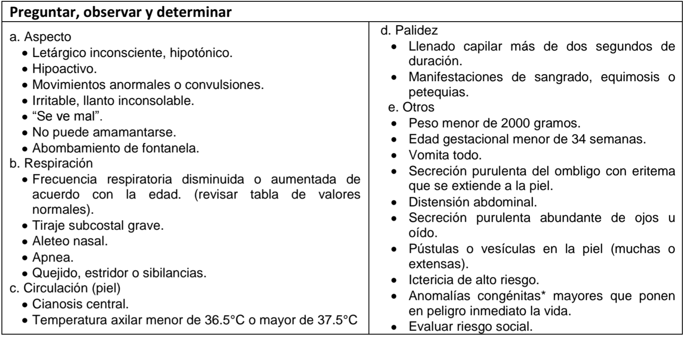
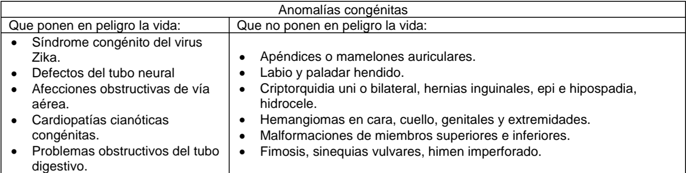
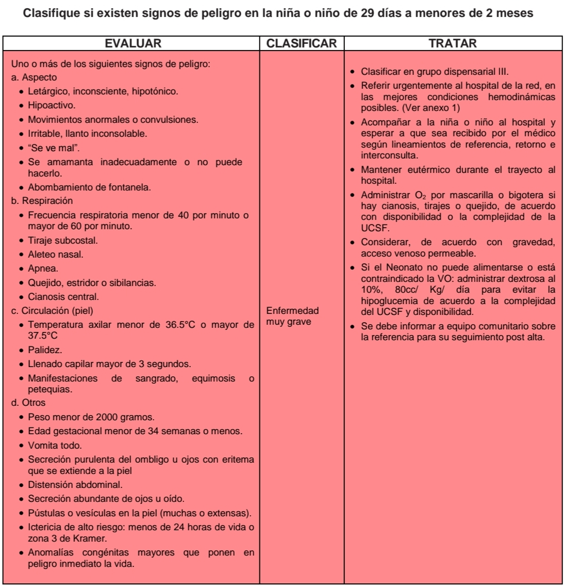
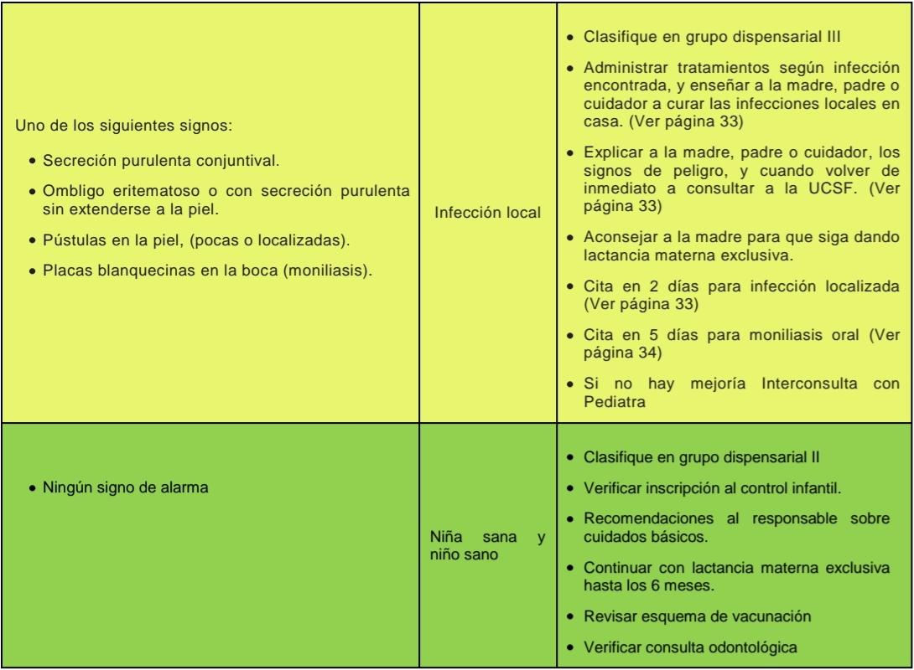
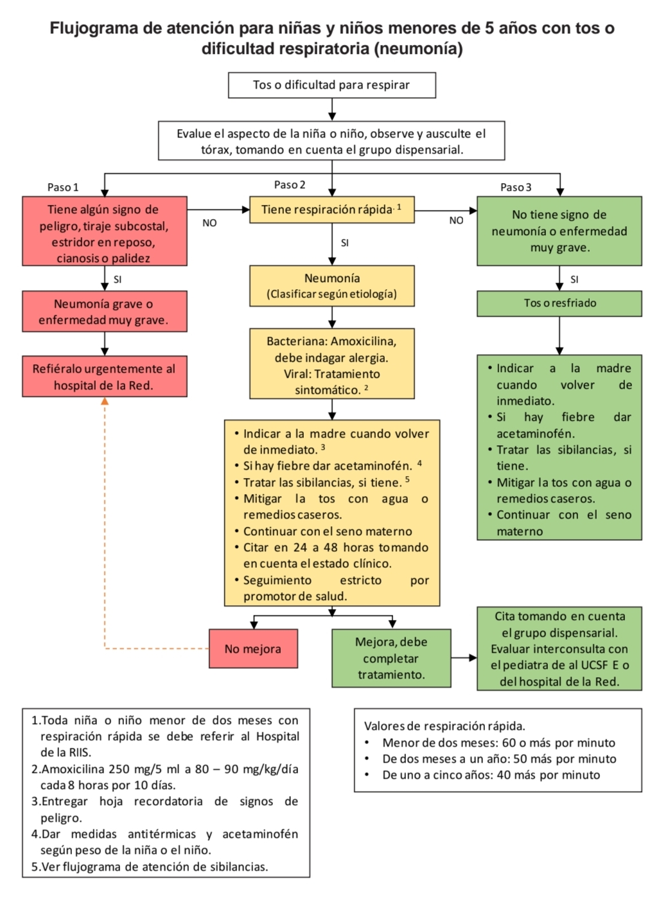
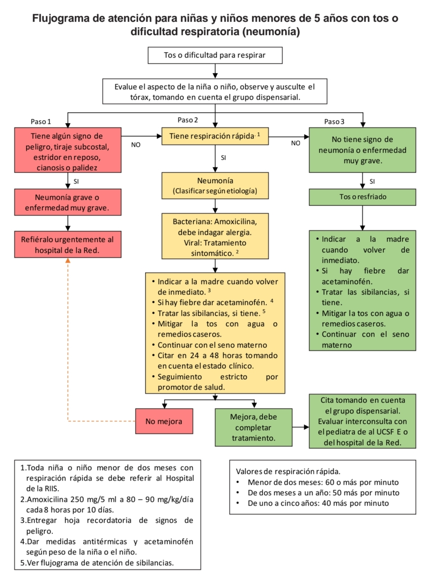

Atención Preconcepcional
Control Prenatal
Resultado:
Calendario de Controles Subsecuentes:
Atención durante el Parto
Atención de Salud Infantil
Motivo de Consulta
Seleccione uno o más motivos de consulta para el niño/a:
- Saludar con amabilidad, presentarse y mantener contacto visual.
- Usar lenguaje claro, asertivo y comprensible.
- Crear un ambiente agradable y respetuoso.
- Preguntar el nombre de la madre, del bebé y del acompañante (if hay).
- Preguntar el motivo de la consulta.
- Hacer una historia clínica completa y documentarla.
- Realizar examen físico completo con autorización y en presencia del responsable.
- Determinar el grupo de riesgo (grupo dispensarial).
- Completar expediente clínico y agregarlo a ficha familiar.
- Identificar if es consulta nueva o reevaluación.
- Explicar referencia if se envía a otro lugar.
- Mantener actualizados registros de gestión infantil.
2.1 Antecedentes prenatales:
- ¿Hubo control prenatal?
- Ruptura de membranas ≥18 horas.
- Fiebre materna.
- Infecciones TORCHS, VIH, Zika, etc.
- Infecciones vaginales, urinarias o bucales (2 semanas antes del parto).
2.2 Antecedentes perinatales:
- Tipo de parto, apego, lactancia, alojamiento conjunto.
- Edad gestacional, vacunas, tamizajes.
- Hospitalización, antibióticos, cirugía, etc.
- ¿Puede amamantarse?
- ¿Recibe lactancia materna exclusiva, mixta o fórmula?
- ¿Hay vómitos o regurgitaciones?
- Horas de sueño y vigilia.
- ¿Duerme fácilmente?
- Actividades durante el estado de vigilia.
- Cuántas veces orina/cambios de pañal.
- Color de la orina.
- Cuántas veces defeca y relación con la alimentación.
- Características de las heces: color, consistencia, olor, moco o sangre.
- Fiebre o frialdad.
- Llanto continuo.
- Sangrados.
- Convulsiones.
- Diarrea.
- Apariencia general: piel, movimientos, simetría, estímulos, malformaciones.
- Signos vitales: FC, FR, temperatura.
- Crecimiento: peso, talla, perímetro cefálico.
- Cabeza y cara: fontanelas, orejas, ojos, nariz, boca.
- Cuello: simetría, movilidad, masas, ganglios, pulsos.
- Tórax: forma, simetría, tirajes, coloración, expansión, ruidos pulmonares y cardíacos.
- Abdomen: forma, cordón, ruidos, masas.
- Genitales y ano: hernias, fístulas, permeabilidad.
- Extremidades: dedos, movilidad, cadera.
- Columna: hoyuelos, lunares, malformaciones.
- Neurológico: reflejos (Moro, búsqueda, succión, prensión).
- Completar antecedentes if no se hizo en la primera consulta.
- Evaluar estado general y físico como en la primera visita.
- Dar seguimiento a riesgos, enfermedades, hábitos, educación.
👶 Evaluar y referir if se detectan:
- Problemas de succión o lengua limitada → referir a pediatría.
- Malformaciones orales → referir a pediatría.
- Dientes al nacer o nódulos blancos → referir a odontología.
🪥 If no hay problemas:
- Lavar manos con agua y jabón.
- Enrollar gasa o paño limpio en el dedo con agua hervida.
- Limpiar suavemente lengua, encías, carrillos y paladar.
- Hablar con lenguaje claro y responder dudas.
- Recomendar lactancia materna exclusiva.
👩⚕️ Observar lactancia materna:
- If no ha comido en 1h, pedir que amamante.
- Observar posición: cuerpo recto, nariz al pezón, “panza con panza”.
- Agarre correcto: mentón al pecho, boca abierta, labio inferior hacia fuera.
- Succión: lenta, profunda, con pausas.
- Evaluar causas if no succiona bien.
- Verificar: úlceras, placas blancas, obstrucción nasal.
🍽️ Problemas comunes en la alimentación:
- Baja producción de leche:
- Fomentar confianza en la madre.
- Aumentar frecuencia de lactancia y vaciar los pechos.
- Buena posición y agarre.
- Tomar 10–15 vasos de agua al día.
- Lactancia a libre demanda (no más de 4 horas).
- Evitar otros líquidos o alimentos.
- Orientar cuándo consultar de nuevo.
- Congestión/Ingurgitación mamaria:
- Masajes y extracción manual.
- Calor antes y frío después de lactar.
- Amamantar frecuentemente de ambos pechos.
- Educar sobre extracción y conservación de leche.
- Pezones agrietados:
- Corregir posición y agarre.
- Exponer pechos al aire/sol.
- Evaluar malformaciones en el bebé.
- If hay dolor, extraer leche y dar con cuchara.
- Aplicar leche materna sobre las grietas.
- Mastitis:
- Evaluar signos: fiebre, secreción.
- Masajes y calor antes de lactar.
- Iniciar con el pecho sano.
- Extraer leche if es necesario.
- Médico puede indicar antibióticos/analgésicos.
- Niño o niña no gana peso:
- Verificar salud general e inflamaciones.
- Confirmar frecuencia y duración de lactancia.
- Revisar orina y heces.
- Observar técnica de amamantamiento.
- Lactancia a libre demanda (máx. 2 horas entre tomas).
- Cólicos:
- Corregir técnica para sacar gases.
- Evitar alimentos picantes, muy condimentados o exceso de lácteos.
- Rechazo al seno por fórmula:
- If no vuelve a lactancia materna, referir al médico.
- Enseñar a alimentar con taza o cuchara.
🩺 Medidas generales:
- Explicar enfermedad y tratamiento.
- Verificar comprensión.
- Informar cuándo volver al centro de salud.
- Evitar automedicación.
- Reforzar beneficios de lactancia.
⚠️ Volver inmediatamente if el bebé:
- No succiona bien.
- Tiene fiebre o hipotermia.
- Respira rápido o con dificultad.
- Tiene deshidratación o sangre en heces.
📅 Controles específicos:
- Inflamación localizada: volver en 2 días.
- Moniliasis oral: volver en 5 días.
- Control sano: volver en 30 días.
🧴 Tipos de inflamación:
- Inflamación del ombligo:
- Buscar enrojecimiento y secreción.
- Lavar con agua y jabón, secar bien.
- Aplicar alcohol 70% y antibiótico tópico if se indica.
- No usar fajero.
- Pústulas:
- Revisar ubicación, tamaño y secreción.
- Lavar y secar la zona, no reventarlas.
- Aplicar antibiótico tópico if se indica.
- Secreción ocular:
- Observar tipo de secreción y revisar ojos.
- Limpiar con agua hervida.
- Aplicar colirio de cloranfenicol cada 2 h por 5 días.
- Moniliasis oral:
- Buscar placas blancas en la boca.
- Aplicar nistatina con gasa.
- Referir if hay dificultad para alimentarse o if empeora.
🟡 Pasos iniciales:
- Determinar if es la primera vez que consulta por ictericia.
- Preguntar:
- ¿Desde cuándo está amarillo el niño o niña?
- ¿Está siendo alimentado con lactancia materna exclusiva?
- ¿Algún hermano mayor tuvo ictericia al nacer?
- ¿La madre está tomando algún medicamento?
- ¿Qué tipo sanguíneo tiene la madre?
👶 Evaluación clínica (con el bebé desnudo):
- Extensión del tinte ictérico en la piel.
- Estado neurológico:
- ¿Está muy flojo? (hipotónico)
- ¿Está muy tieso? (hipertónico)
- ¿Está dormido o poco activo? (hipoactivo)
- ¿No succiona?
- Características del llanto:
- ¿Llanto agudo o muy monótono?
- Buscar cefalohematomas (hinchazones por parto difícil).
📊 Clasificación de Kramer:
Permite determinar la gravedad de la ictericia según en qué parte del cuerpo aparece (de cabeza a pies).
Información importante:
- Período gris (hasta los 2-3 meses): Alta vulnerabilidad a enfermedades. Es difícil distinguir entre inflamaciones bacterianas graves y virales leves, por lo que requiere atención cuidadosa.
- Prematurez: If el niño fue prematuro (menos de 2,000 gramos), se deben seguir cuidados especiales hasta los 5 años.
Acciones del personal de salud:
- Realizar historia clínica y examen físico completo.
- Preguntar al cuidador por los problemas del niño o niña.
- Identificar el grupo dispensarial y registrar en la ficha de seguimiento para programar controles y visitas domiciliarias.
- Completar el expediente clínico individual y anexarlo a la ficha familiar.
- Confirmar if se trata de una primera consulta o una reevaluación.
- Informar al cuidador sobre la necesidad de referencia al hospital, if aplica.
- Mantener actualizado el libro de gestión infantil para facilitar decisiones en la programación de actividades en la UCSF y a nivel territorial.
Examinar de la siguiente manera:
 Clasificar if existen signos de peligro:
 ✅ Definición:
Inflamación viral que afecta la laringe, tráquea y bronquios (región subglótica).
- Formas:
- Laringotraqueitis: común y típica.
- Laringotraqueobronquitis: forma grave, con sobreinflamación bacteriana.
🦠 Etiología (causas):
- Principal: Virus parainfluenza (75%)
- Otros: Influenza A y B, adenovirus, VSR, sarampión.
- Influenza A → asociado a casos graves.
- Raramente: Mycoplasma pneumoniae.
🤧 Manifestaciones clínicas:
- Tríada clásica:
- Disfonía
- Tos perruna (seca, metálica)
- Estridor inspiratorio (ruido al inhalar)
- Puede haber disnea (dificultad respiratoria).
- Empeora con agitación, llanto o al acostarse.
- Dura de 2 a 7 días; tos puede persistir más.
🧪 Diagnóstico:
- Clínico (no requiere exámenes en la mayoría de los casos).
- Evaluar: estado general, signos vitales, vía aérea, estado mental.
- Radiografía solo if hay duda diagnóstica o evolución atípica.
- Signo radiológico típico: “punta de lápiz” o “campanario”.
💊 Tratamiento:
- Oxígeno: if hay dificultad respiratoria o hipoxemia.
- 1. Corticoides (siempre):
- Dexametasona: 0.6 mg/kg (una dosis, vía oral, IM o IV).
- Mejora síntomas y reduce necesidad de atención médica.
- 2. Epinefrina nebulizada (if moderado o grave):
- Dosis:
- Racémica 2.25%: 0.05 ml/kg (máx. 0.5 ml)
- L-epinefrina 1:1,000: 0.5 ml/kg (máx. 5 ml)
- Inicio rápido pero efecto breve → observar al menos 2 horas.
- Efectos adversos cardíacos son raros, pero hay que vigilar en uso frecuente.
🧠 Definición:
Inflamación del parénquima pulmonar adquirida fuera del hospital, en pacientes previamente sanos, sin hospitalización en los últimos 7 días ni durante las primeras 48 h de ingreso actual.
📋 Etiología:
📋 Clasificación:
📋 Manifestaciones clínicas:
- Generales: Fiebre, anorexia, vómitos, mal estado general.
- Respiratorias: Tos, dificultad respiratoria (taquipnea, tirajes, aleteo nasal, cianosis), SatO₂ <94%.
- Signos físicos: Consolidación pulmonar (matidez a la percusión, estertores, egofonía, frémito vocal aumentado).
- Síntomas iniciales:
- Inflamación respiratoria alta (rinitis, tos) por varios días.
- Fiebre (más elevada en neumonía bacteriana).
- Signos de dificultad respiratoria:
- Taquipnea (hallazgo más frecuente en pediatría).
- Tirajes, aleteo nasal, uso de músculos accesorios.
- Cianosis, letargo en casos graves.
- Auscultación torácica:
- Crepitantes o sibilancias.
- No siempre se puede diferenciar clínicamente entre neumonía vírica y bacteriana.
- Niños mayores y adultos:
- Fiebre alta, inicio súbito, tos, dolor torácico, respiración rápida, somnolencia, confusión.
- Síntomas abdominales:
- Distensión, dolor abdominal, hepatomegalia aparente.
- En lactantes:
- Dificultad para alimentarse, quejido, vómitos, diarrea, progresión rápida en neumonías bacterianas.
🧪 Diagnóstico:
- Laboratorio:
- Hemograma: GB >15,000/mm³ con neutrofilia + fiebre >39 °C sugiere origen bacteriano.
- PCR y VSG no recomendadas como rutina.
- Hemocultivos: solo en casos graves, empiema o hospitalización.
- Gabinete:
- Rx de tórax solo if: duda diagnóstica, no respuesta al tratamiento, sospecha de complicaciones, fiebre >39 °C con leucocitosis.
- Hallazgos típicos:
- Viral: hiperinsuflación, infiltrados intersticiales bilaterales.
- Bacteriana: consolidación lobar confluente.
- Ecografía pulmonar: útil en consolidaciones y derrames, pero operador-dependiente.
- Diagnóstico etiológico:
- PCR viral: VRS, influenza, metaneumovirus, adenovirus, etc.
- PCR bacteriana: M. pneumoniae, B. pertussis.
- Cultivo de esputo: poco útil en niños pequeños.
- Biomarcadores como procalcitonina y lipocalina-2 están en investigación.
🔍 Diagnóstico diferencial:
- <1 año: Bronquiolitis, meningitis, septicemia, asma.
- 1 año: Aspiración de cuerpos extraños, hidrocarburos, apendicitis.
💊 Tratamiento:
- Ambulatorio (cuadro leve):
- Amoxicilina 80–90 mg/kg/día en 2 dosis. Alternativas: cefuroxima, amoxicilina-clavulánico.
- En edad escolar o sospecha de M. pneumoniae: añadir macrólidos (azitromicina).
- Hospitalario:
- Ampicilina o penicilina G if está vacunado y zona sin alta resistencia.
- Ceftriaxona o cefotaxima if no cumple criterios anteriores.
- Añadir vancomicina o clindamicina if se sospecha S. aureus.
- Añadir macrólido if sospecha de M. pneumoniae.
- Manejo sintomático y de soporte:
- Oxígeno if SatO₂ <92%.
- Hidratación con fórmula de Holliday y Segar.
- Acetaminofén 10–15 mg/kg cada 4–6 h.
- Antibióticos solo if sospecha bacteriana.
- La mayoría de casos en preescolares son virales.
- Retrasar antibióticos if clínica viral leve con vigilancia cercana.
- Duración del tratamiento:
- Afebril ≥72 h.
- General: 7–10 días. Azitromicina: 5 días.
- Leves: 5–7 días.
🏥 Criterios de ingreso:
- Menores de 3 meses.
- Cianosis, apnea, dificultad respiratoria moderada-severa.
- SatO₂ <94%.
- Intolerancia VO, deshidratación, patología de base, fracaso del tratamiento, compromiso hemodinámico, riesgo social.
✅ Criterios de alta:
- Mejoría clínica.
- Afebril ≥24 h.
- Buena tolerancia oral.
- Continuación posible de antibióticos en casa.
- Sin riesgo social.
📅 Seguimiento:
- Alta con resumen clínico.
- Control clínico en primeros 7 días post-alta.
- Evaluación nutricional.
- Educación a los padres sobre signos de alarma y adherencia al tratamiento.
🧱 Complicaciones:
- Diseminación y complicaciones frecuentes:
- Derrame pleural, empiema, pericarditis.
- Bacteriemia: meningitis, endocarditis, artritis, osteomielitis.
- Patógenos asociados a empiema:
- S. aureus, S. pneumoniae, S. pyogenes.
- Pleuresía y derrame pleural:
- Derrames estériles frecuentes.
- Enviar siempre líquido pleural a Gram, cultivo y PCR if es posible.
- Pequeños (<1 cm): solo antibióticos.
- Grandes, purulentos o con dificultad respiratoria: drenaje (toracostomía).
- Drenaje:
- Tubo de tórax + fibrinolíticos (urocinasa, tPA).
- Videotoracoscopía (VATS) if fibrinolíticos no son suficientes.
- Toracotomía solo if falla el abordaje inicial.
🌍 Países en desarrollo:
- Baja cobertura antibiótica.
- Programas OMS para capacitación y detección precoz.
- Zinc oral: 10 mg/día (<12 meses) o 20 mg/día (≥12 meses) por 7 días.
- CPAP de burbuja reduce mortalidad cuando no hay ventilación mecánica.
 

🧠 Definición:
Enfermedad inflamatoria del tracto respiratorio inferior que causa obstrucción de las vías aéreas pequeñas. Afecta principalmente a lactantes menores de 2 años. Se presenta tras una inflamación viral de vías respiratorias altas (coriza) de 2–3 días.
CLASIFICACIÓN:
🦠 Etiología (agentes causales más frecuentes):
- Virus sincitial respiratorio (VSR): 80–90% de los casos
- Otros virus: Parainfluenza, Adenovirus, Influenza A y B, Metapneumovirus, Rinovirus, Enterovirus
- Mycoplasma pneumoniae (más raro en menores de 2 años)
🤒 Manifestaciones clínicas detalladas – Bronquiolitis:
- 👶 Edad afectada: Principalmente <2 años.
- 90% de hospitalizaciones en menores de 12 meses.
- Pico de incidencia entre 3 y 6 meses.
- La edad no es un criterio diagnóstico exclusivo.
- 🌡️ Fiebre:
- Puede haber fiebre o antecedente reciente.
- Fiebre alta (≥39 °C) no es común → pensar en otras causas if se presenta.
- 👃 Rinorrea:
- Secreción nasal acuosa precede a tos y taquipnea.
- 🤧 Tos:
- Seca, persistente y sibilante.
- 🫁 Frecuencia respiratoria:
- Taquipnea es un hallazgo relevante, también presente en neumonía.
- 🍼 Pobre alimentación:
- Relacionada con disnea, frecuente causa de ingreso.
- 💨 Aumento del trabajo respiratorio:
- Retracciones, aleteo nasal.
- Tórax hiperinflado (puede diferenciar de neumonía).
- 🔉 Auscultación pulmonar:
- Estertores finos inspiratorios (frecuentes, no universales).
- Sibilancias espiratorias agudas.
- 😴 Apnea:
- Riesgo en <1 mes, prematuros o bajo peso al nacer.
Características:
- Fiebre (puede estar ausente o ser baja)
- Rinorrea previa a otros síntomas
- Tos seca, no productiva, con sibilancias
- Taquipnea y aumento del trabajo respiratorio (tirajes, aleteo nasal)
- Estertores finos inspiratorios (no siempre presentes)
- Hiperinsuflación torácica
- Pobre alimentación (por disnea), causa frecuente de hospitalización
- Apnea (en <1 mes, prematuros o bajo peso)
📝 El cuadro puede empeorar en las primeras 72 h antes de mejorar.
🔬 Diagnóstico:
- Clínico: basado en historia y exploración física
- Oximetría de pulso: debe realizarse siempre
- Rayos X: solo if duda diagnóstica o mala evolución
- Gases arteriales: en casos graves con sospecha de inflamación respiratoria
- Hemograma, electrolitos, cultivos: no indicados de rutina, salvo casos graves
🔍 Diagnóstico diferencial:
- <1 año: Neumonía, Asma (especialmente en mayores), Aspiración de cuerpo extraño, Cardiopatías congénitas, Fibrosis quística, Sepsis, Acidosis metabólica
⚠️ Complicaciones:
- Inflamación respiratoria
- Sobreinflamación bacteriana
- Apnea
- Sibilancias persistentes o recurrentes
💊 Tratamiento (no farmacológico y farmacológico):
- Medidas de soporte:
- Succión nasal if hay secreciones obstructivas
- Hidratación adecuada (VO, sonda o IV)
- Oxígeno if SatO₂ ≤92%
- Medicamentos NO recomendados rutinariamente:
- Broncodilatadores (pueden probarse en algunos casos)
- Corticoides (inhalados o sistémicos)
- Antibióticos (solo if hay sospecha clara de sobreinflamación bacteriana)
- Antivirales
🛑 No se recomienda fisioterapia torácica rutinaria (percusión/vibración), salvo en UCI.
🏥 Criterios de ingreso:
- Apnea
- Saturación de oxígeno ≤92%
- Dificultad respiratoria moderada o severa (tirajes, cianosis)
- Pobre alimentación o signos de deshidratación
- Edad <2 meses, prematuridad, comorbilidades
- Entorno social de alto riesgo o difícil acceso a salud
✅ Criterios de alta:
- Buena tolerancia al oxígeno ambiente
- Alimentación oral adecuada
- Mejoría clínica sostenida
- Padres capaces de cuidar y usar succión nasal
- Acceso a seguimiento médico o visita domiciliar
📚 Crisis Asmática
🧭 1. Definición de Asma y Crisis Asmática
- Asma: Enfermedad inflamatoria crónica de la vía aérea con síntomas como:
- Tos seca.
- Disnea.
- Sibilancias.
- Opresión torácica.
- Síntomas variables en intensidad y frecuencia.
- Crisis asmática: Episodio agudo/subagudo de empeoramiento de síntomas respiratorios causado por broncoconstricción, inflamación y secreción mucosa.
⚠️ 2. Etiología – Desencadenantes de la Crisis
- Inflamaciones virales (rinovirus, VSR).
- Contaminantes del aire, humo, gases, vapores.
- Aeroalérgenos (ácaros, polvo, polen, hongos).
- Cambios bruscos de temperatura.
- Ejercicio físico, estrés emocional.
- Fármacos: AINES, aspirina, beta bloqueadores.
🧪 3. Manifestaciones Clínicas
- Tos seca nocturna, empeora con el ejercicio.
- Sibilancias espiratorias, o bifásicas en casos severos.
- Disnea, intolerancia al esfuerzo.
- Taquipnea, uso de músculos accesorios.
- Hipoxemia: SatO₂ disminuida.
- En niños pequeños puede haber:
- Irritabilidad, rechazo al alimento, cianosis.
📉 4. Diagnóstico
- Anamnesis + examen físico completo.
- Oximetría de pulso: clave para evaluar severidad.
- Espirometría (FEV1, PEF): if el niño coopera.
- Escala clínica/puntaje pulmonar: reevaluar cada 20–30 min tras tratamiento.
Tratamiento según severidad
- Crisis leve (PS 1–3, SatO₂ ≥ 95%): Salbutamol en pMDI (100 µg/puff) 2–4 inhalaciones con cámara espaciadora, separadas 30 seg. Repetir cada 20 min durante 1 hora si no mejora. Si mejora, alta con plan de acción escrito.
- Crisis moderada (PS 4–6, SatO₂ 91–94%): Salbutamol 6–8 puff + Ipratropio (20 µg/puff) con cámara o nebulización con O₂ a 6–8 L/min. Salbutamol 0.03 ml/kg + Ipratropio 250 µg (<20 kg) o 500 µg (≥20 kg). Iniciar corticoides orales: Metilprednisolona 1 mg/kg o Prednisona 1–2 mg/kg/día por 3–5 días.
- Crisis grave (PS >7, SatO₂ < 91%): Canalizar vía venosa y trasladar a observación o UCI. Considerar Sulfato de Magnesio IV (50 mg/kg en 20 min, máx. 2 g). Adrenalina IM si hay anafilaxia o falta de cooperación. En UCIP: salbutamol IV o SC. Valorar CPAP o BiPAP para evitar intubación.
💊Tratamiento Inicial
En todos los niveles:
- Oxígeno suplementario if SatO₂ < 92%.
- Salbutamol (SABA):
- Inhalado con cámara espaciadora o nebulizado.
- Intermitente o continuo según la gravedad.
- Corticoides sistémicos:
- Prednisona, prednisolona o dexametasona.
En crisis graves o sin respuesta:
- Sulfato de magnesio EV: 50 mg/kg en 20 min (máx. 2 g).
- Ventilación no invasiva (CPAP o BiPAP): if fatiga respiratoria.
- Adrenalina IM: solo en anafilaxia o falta de cooperación.
- NO usar adrenalina IV por riesgo cardiovascular.
- Aminofilina IV: desaconsejada por estrecho margen terapéutico.
- Salbutamol IV o SC: solo en UCI, casos extremos.
🛠️ Tratamiento de la Crisis
- SABA inhalado:
- 2–4 inhalaciones cada 20 min en la primera hora
- Luego según gravedad
- Glucocorticoides orales:
- Prednisolona 0.5–1 mg/kg/día
- Oxígeno suplementario:
- If SatO₂ < 95%
- Combinación SABA + anticolinérgicos:
- Mejora PEF y FEV1
- Teofilina:
- Solo if no hay acceso a B2 inhalados (no recomendada con altas dosis de SABA)
🏥 7. Criterios de Ingreso Hospitalario
- No mejora tras 1 hora con salbutamol + corticoides.
- SatO₂ ≤ 92%, trabajo respiratorio persistente.
- Alteración neurológica (agitación, somnolencia).
- Necesidad de hidratación IV.
- Comorbilidades o complicaciones (neumotórax, atelectasia).
🆘 8. Criterios para Ingreso a UCI
- PaCO₂ > 55 mmHg, PaO₂ < 60 mmHg (FiO₂ > 60%).
- Fatiga respiratoria, hipoventilación, alteración del sensorio.
- Inestabilidad hemodinámica.
- Incremento de PaCO₂ > 5 mmHg/hora.
- Fallo respiratorio inminente.
💥 9. Complicaciones Graves
- Neumotórax a tensión.
- Neumomediastino.
- Atelectasia.
- Barotrauma por ventilación.
- Neumonía secundaria.
- Paro respiratorio.
✅ 10. Criterios de Alta del Servicio de Urgencias
- Síntomas mejorados, tolera deambulación sin disnea.
- No requiere broncodilatadores durante la noche.
- Intervalo > 4 horas entre dosis de SABA.
- Examen físico casi normal.
- FEV1 o PEF > 70% del valor personal.
- Buena adherencia y comprensión del tratamiento.
- Complicaciones resueltas.
📅 11. Seguimiento Post-Alta
- Control a las 48 h en unidad de salud familiar (UCSF-E).
- Evaluación semanal tras el alta.
- Referencia a neumología/alergología para seguimiento.
🏥 12. Niveles de Atención
- Primer nivel: crisis leves.
- Segundo nivel: crisis moderadas a severas.
- Tercer nivel: crisis graves, pacientes con comorbilidades.
🔁 13. Criterios de Referencia
- FEV1 < 60%, SatO₂ < 90%, alteración del sensorio.
- No respuesta al tratamiento.
- Necesidad de soporte ventilatorio o UCI.
🛡️ 14. Prevención y Educación Familiar
- Informar que el paciente puede estar asintomático pero con obstrucción.
- Eliminar:
- Humo de cigarro, leña.
- Gases, pinturas, polvo, humedad.
- Peluches, mascotas, ropa con plumas.
- Evitar cambios bruscos de temperatura.
- Lavar frecuentemente la ropa de cama y cortinas.
- Mantener limpieza del ventilador.
- Educación sobre uso correcto de inhaladores y signos de alarma.
- Plan de acción familiar en caso de síntomas.
🦠 Rinosinusitis Aguda Bacteriana (RSAB)
✅ Definición
Inflamación de los senos paranasales de duración < 4 semanas, con resolución completa de los síntomas.
🧫 Etiología
Agentes comunes:
- Streptococcus pneumoniae
- Haemophilus influenzae
- Moraxella catarrhalis
- Streptococcus beta-hemolíticos
- Staphylococcus aureus
- Flora polimicrobiana (1/3 de los casos)
- Anaerobios → asociados a inflamaciones dentales
👃 Manifestaciones Clínicas
Síntomas principales: congestión nasal, rinorrea (de cualquier tipo), tos persistente (peor en la noche)
Otros:
- Dolor facial, cefalea, presión craneal
- Halitosis, hiposmia/anosmia
- Inflamación periocular
- Irritabilidad, vómitos, otalgia, odinofagia (niños)
Síntomas de alarma (complicaciones):
- Edema periorbitario, alteración ocular
- Cefalea severa, fiebre recurrente
- Convulsiones, vómitos, alteración del estado mental
🩺 Diagnóstico
Clínico, salvo sospecha de complicación.
🔍 3 formas de presentación:
- Síntomas > 10 días sin mejoría.
- Inicio brusco con fiebre ≥39°C y rinorrea purulenta.
- Empeoramiento tras un catarro común (a los 6–7 días).
⚖️ Diagnóstico Diferencial
- Catarro común, rinitis aguda
- Rinitis alérgica, cuerpo extraño nasal
- Adenoiditis, pólipos, tumores
- Tos variante de asma, bronquitis, tosferina, TB
- Cefalea tensional, dolor dental, disfunción temporomandibular
💊 Tratamiento
📌 Antibióticos
Primera línea:
- Amoxicilina 80–90 mg/kg/día, cada 8 h por 10 días
- Alternativa: Amoxicilina/ácido clavulánico (if sospecha resistencia)
Alérgicos a penicilina:
- No grave: Claritromicina 15 mg/kg/día cada 12 h
- Fracaso a macrólidos: Levofloxacino 10–20 mg/kg/día
Tratamiento hospitalario (casos graves o con complicaciones):
- Ampicilina/sulbactam, Cefotaxima, Ceftriaxona
- Alergia grave: Clindamicina, Levofloxacino
- Sospecha de anaerobios: combinación con Metronidazol
💧 Tratamiento no antibiótico
- Lavados nasales con solución salina
- Corticoides intranasales:
- Triamcinolona (>8 años)
- Mometasona (<8 años)
- Analgesia: Ibuprofeno o Acetaminofén
❌ NO se recomiendan: antihistamínicos, mucolíticos, descongestionantes
🏥 Niveles de atención
- 1er nivel: RSAB no complicada
- 2do nivel: aspecto séptico, falla de antibióticos, entorno social riesgoso
- 3er nivel: requerimiento de valoración especializada (ORL, oftalmología)
💉 Prevención
Vacunación:
- Antineumocócica
- Haemophilus influenzae tipo B
- Antigripal
Sinusitis Aguda
La sinusitis aguda se define como la inflamación de la mucosa de los senos paranasales, de origen usualmente bacteriano, que persiste por más de 10 días y menos de 4 semanas.
I. Epidemiología y Etiología
Epidemiología:
- Suele ocurrir en niños menores de 6 años.
- Se estima que es una complicación en el 5% al 10% de las infecciones respiratorias víricas.
- Factores de riesgo: Anomalías anatómicas (desviación septal) e inmunosupresión.
Agentes responsables:
- Streptococcus pneumoniae (50% de los casos).
- Haemophilus influenzae (ha disminuido gracias a la vacunación).
II. Manifestaciones Clínicas
Los signos y síntomas incluyen:
- Rinorrea (clara, mucoide o purulenta), descarga nasal y retrofaríngea.
- Congestión nasal.
- Tos seca o húmeda presente durante todo el día, a menudo empeora por la noche.
- Edema palpebral matutino transitorio.
- Dolor maxilar, frontal o dental intermitente.
- Cefalea frontal o retroorbitaria.
- Fiebre o febrícula.
- Halitosis (mal aliento).
III. Método Diagnóstico
El diagnóstico se basa exclusivamente en la interpretación de los hallazgos clínicos.
La evaluación radiológica no está indicada en el diagnóstico inicial de la sinusitis aguda no complicada.
IV. Manejo Terapéutico
El tratamiento incluye antibióticos y manejo sintomático:
Antibiótico de primera línea:
- Amoxicilina oral: 80 mg/kg/día, dividida en 3 dosis, por 10 a 14 días. Dosis máxima diaria: 2-3 gramos.
En caso de alergia a la penicilina:
- Eritromicina: 30-50 mg/kg/día, dividida en 4 dosis, por 10 a 14 días. Dosis máxima diaria: 2 gramos.
Manejo sintomático:
- Acetaminofén: 10-15 mg/kg/dosis VO cada 6 horas, por 3 a 5 días.
- Ibuprofeno: 10 mg/kg/dosis cada 6-8 horas. Dosis máxima diaria: 40 mg/kg/día, por 5 días.
- Líquidos orales abundantes.
V. Educación en Salud
- Asegurar el cumplimiento estricto del antibiótico.
- Programar un control en 48 a 72 horas.
- Advertir que consulten de inmediato si los síntomas persisten o si aparecen complicaciones.
- Evitar el contacto con humo de tabaco y leña.
VI. Criterios de Referencia
Se debe referir al paciente a un segundo nivel de atención si:
- No responde al tratamiento inicial.
- Presenta recurrencia (reaparición de síntomas después de una remisión).
- Desarrolla complicaciones:
- Oculo-orbitarias: celulitis periorbitaria, trombosis del seno cavernoso.
- Intracraneales: absceso cerebral, meningitis.
Orzuelo: Infección de las Glándulas Palpebrales
El orzuelo es una infección de las glándulas sebáceas de los párpados, muy común, especialmente en la población pediátrica.
I. Epidemiología y Etiología
- Población Afectada: Muy común en la población general y particularmente en niños.
- Factores de Riesgo: Pobre higiene de manos y blefaritis.
- Agente Causal Común: Staphylococcus aureus.
- Orzuelos Múltiples/Recurrentes: Sugieren la posibilidad de inmunodeficiencia (a menudo congénita).
II. Manifestaciones Clínicas
- Nódulo blando, doloroso y eritematoso (rojo).
- Diámetro de 5 a 10 mm.
- Usualmente solitario, pero puede ser múltiple o bilateral.
- Presenta características de un absceso.
III. Método Diagnóstico
El diagnóstico es clínico.
Se recomienda evitar la manipulación de los ojos con las manos por parte de los niños.
IV. Manejo Terapéutico
- Higiene: Lavado de pestañas con shampoo de pH neutro.
- Compresas Tibias: Aplicar compresas de agua tibia sobre el párpado afectado durante 10 a 15 minutos, 4 veces al día, para acelerar la resolución y aliviar el malestar.
- No Manipular: No intentar extirpar el orzuelo; deben drenar espontáneamente.
- Antibiótico Tópico: Cloranfenicol, 4 veces al día, continuando hasta 1 semana después del control clínico.
- Antibiótico Oral (raro): Solo en casos refractarios al tratamiento tópico. Se recomienda Dicloxacilina (25-50 mg/kg/día cada 6 horas) o Eritromicina (50 mg/kg/día cada 6 horas) por vía oral durante 7 a 10 días.
V. Educación en Salud
- Fomentar el lavado frecuente de manos en los niños.
- Evitar el contacto con otros niños que presenten la enfermedad para prevenir la propagación.
VI. Criterios
- De Seguimiento: El orzuelo típicamente resuelve en 5 a 7 días.
- De Referencia (a un nivel superior de atención):
- Si las lesiones son grandes (mayores de 10 mm) y no resuelven con el tratamiento convencional.
- Si empeora o no mejora en una semana de tratamiento.
- Si la protuberancia sangra.
- Si se complica con celulitis periorbitaria o absceso.
- Si presenta problemas con la visión.
🦻 Otitis Media Aguda (OMA)
📌 Definición
Inflamación súbita del oído medio con presencia de exudado (seroso, mucoso, purulento o mixto) en la cavidad timpánica, asociado a síntomas locales y sistémicos.
🧭 Clasificación
- OMA esporádica: Episodios aislados sin patrón de recurrencia.
- OMA de repetición:
- OMA persistente: Reaparición de síntomas en <7 días tras finalizar tratamiento (mismo episodio).
- OMA recidivante: Reaparición >7 días tras curación (nuevo episodio).
- OMA recurrente: ≥3 episodios en 6 meses o ≥4 en 1 año.
- OME (Otitis Media con Exudado): Exudado sin signos clínicos de inflamación activa.
- OMEC (Otitis Media con Exudado Crónico): Exudado >3 meses.
🦠 Etiología
Agentes más comunes:
- Bacterias: Streptococcus pneumoniae, Haemophilus influenzae no tipificable, Moraxella catarrhalis.
- Virus: Influenza, VRS, adenovirus, rinovirus (en 50% de los casos).
La inflamación viral de vías respiratorias altas es un desencadenante frecuente.
⚠️ Factores de riesgo
- Edad <2 años (trompa de Eustaquio inmadura, inmunidad menor).
- Guarderías / contacto con otros niños.
- No lactancia materna / uso frecuente de biberón.
- Alimentación en posición supina.
- Exposición al humo de cigarro (pasiva).
- Hacinamiento y exposición a IRAs.
- Reflujo gastroesofágico.
- Anomalías craneofaciales (síndrome de Down, paladar hendido).
- Historia familiar de OMA o complicaciones.
- Esquemas de vacunación incompletos.
🤒 Manifestaciones clínicas
👶 Niños <3 años
- Irritabilidad, llanto nocturno.
- Disminución del apetito.
- Dificultad para dormir.
- Fiebre, vómitos.
- Otalgia (signo indirecto: se tocan o jalan la oreja).
- Otorrea (if hay ruptura timpánica).
- Rinorrea, hiperemia conjuntival.
🧒 Niños >3 años
- Fiebre.
- Otalgia (dolor agudo, punzante).
- Hipoacusia.
- Sensación de oído tapado.
- Vértigo ocasional.
🩺 Examen físico
General
- Buscar signos de sepsis: decaimiento, postración, palidez, mala perfusión.
- Evaluar signos meníngeos ante sospecha de complicación intracraneal.
Regional
- Revisión de vías respiratorias altas, cuello y mastoides.
Otoscopia
Signos clave:
- Abombamiento de membrana timpánica.
- Coloración anormal (amarillenta, opaca, hiperemia intensa).
- Niveles hidroaéreos visibles.
- Movilidad reducida o ausente (con otoscopio neumático).
- Otorrea (if hay perforación).
✅ Diagnóstico
OMA Confirmada
Debe cumplir:
- Inicio agudo de síntomas.
- Signos de ocupación del oído medio (abombamiento, otorrea, pérdida de movilidad de MT).
- Síntomas inflamatorios locales (otalgia, hiperemia intensa de MT).
OMA Probable
- Otalgia sin posibilidad de visualización timpánica adecuada.
- Otoscopia sugestiva sin clínica clara (por edad o dudas familiares).
🔬 Estudios complementarios
- No rutinarios.
- Indicar if sospecha de complicación o falla terapéutica:
- Hemograma, hemocultivos.
- Cultivo de otorrea if MT rota (idealmente <8 horas).
- Timpanocentesis if paciente inmunocomprometido o sin mejoría en 48-72 h.
💊 Tratamiento
📍Indicaciones de antibiótico
- Siempre: OMA severa (otalgia intensa, fiebre ≥39°C), bilateral o unilateral en ≥6 meses.
- Siempre: OMA bilateral no severa en 6–23 meses.
- Opcional (observación o ATB): OMA unilateral no severa en 6–23 meses, o en niños >24 meses.
Observación válida solo if:
- Seguimiento clínico garantizado en 24–48 h.
- Buen estado general, sin comorbilidades ni complicaciones.
💊 Antibióticos
🏥 Manejo por niveles
Primer nivel (Atención primaria)
- Diagnóstico, inicio de tratamiento, educación a padres.
- Seguimiento estrecho.
Segundo nivel
- Pacientes con complicaciones o sin mejoría a las 48–72 h.
Referencia a tercer nivel / Otorrinolaringología
- Mastoiditis.
- Parálisis facial.
- Ruptura de membrana timpánica.
- Falla terapéutica repetida.
- OMA recurrente (valoración electiva).
- Inmunocomprometidos.
🚨 Complicaciones
- Otitis media crónica secretora.
- Mastoiditis aguda.
- Absceso epidural, subdural, cerebral.
- Laberintitis.
- Parálisis facial.
- Osteomielitis.
- Pérdida auditiva.
- Trombosis seno lateral.
🛡️ Promoción y prevención
- Lactancia materna exclusiva hasta los 6 meses.
- Evitar biberón y chupete.
- No exposición al humo de cigarro.
- Chequeos médicos en guarderías.
- Lavado frecuente de manos.
- Evitar contacto con personas con inflamaciones respiratorias.
- Cumplir esquema de vacunación: Neumococo, Haemophilus tipo B, Influenza.
🦠 Enfermedad Diarreica Aguda (EDA)
Definición:
Aumento en frecuencia (≥3 en 24h), disminución de consistencia (líquida/blanda) y volumen de agua en las heces, con duración <14 días. Puede acompañarse de fiebre y vómitos.
Términos equivalentes:
- EDA = Diarrea líquida aguda (DAL).
Evaluación inicial:
- Preguntar por frecuencia, duración, presencia de sangre y vómitos.
- Evaluar signos de deshidratación: estado general, ojos hundidos, pliegue cutáneo, forma de beber.
- Controlar frecuencia cardíaca y llenado capilar.
⚠️ Clasificación clínica de la diarrea
| Tipo | Características |
|---|---|
| Diarrea líquida aguda | ≥3 deposiciones líquidas/blandas en 24h. Agentes indistinguibles clínicamente. No se recomienda antibióticos. |
| Diarrea invasiva (Disentería) | Sangre visible en heces, fiebre, <14 días. Alta mortalidad, requiere antibióticos. Etiología común: Shigella spp. |
| Diarrea persistente | Dura ≥14 días, líquida, blanda o con sangre. |
🧫 Etiología por edad
- <2 años: Principal agente → Rotavirus
- 2-5 años: Principal agente → Shigella spp.
- >5 años: E. coli enterotoxigénica (ETEC)
📊 Epidemiología
- Mortalidad en <5 años: 0.26%
- Mortalidad en <1 año: 0.44%
- Causa frecuente de egresos hospitalarios y morbilidad infantil.
🔍 Evaluación inicial
- Temperatura (fiebre/hipotermia)
- Sistema respiratorio (taquipnea → neumonía + deshidratación)
- Abdomen (dolor, masa, signos de abdomen agudo)
- SNC (letargia, convulsiones, irritabilidad → sospechar deshidratación severa)
- Estado de hidratación (OMS recomienda usar ≥3 signos físicos)
- Estado nutricional (desnutrición aumenta riesgos)
🧪 Apoyo diagnóstico
NO se recomienda de rutina:
- Azúcares reductores, pH, sangre oculta, leucocitos, lactoferrina en heces.
- Coprológico, coproscópico o coprocultivo en DLA sin complicaciones.
SÍ se considera:
- Coprocultivo si fiebre alta, sangre en heces, sospecha de sepsis, >7 días de diarrea.
- Recuento leucocitario:
- ↑ Neutrófilos: infección bacteriana.
- ↑ Eosinófilos: parásitos.
- ↓ Leucocitos y plaquetas: sepsis.
- Reacción leucemoide: Shigella.
Tratamiento:
- La mayoría de diarreas son virales.
- Antibióticos solo en casos seleccionados (p. ej. disentería).
- Administrar primera dosis en el establecimiento.
- Calcular cantidad de medicamentos para el tratamiento completo.
- Aplicar Plan A o B según deshidratación.
💧 Manejo de la deshidratación
Plan A (sin deshidratación):
- SRO después de cada deposición:
- <2 años: 50-100 mL
- ≥2 años: 100-200 mL
- Usar líquidos adecuados (SRO, cocción de cereales, agua + alimentos con almidón).
- Evitar: Gaseosas, bebidas deportivas, soluciones con <40 mmol/L Na.
Plan B (deshidratación leve a moderada):
- SRO baja osmolaridad (Na 75-84 mmol/L, osmolaridad 240-250 mOsm).
- 50-100 mL/kg en 2-4h.
- Si no tolera: usar sonda nasogástrica.
- Monitoreo cada hora.
Plan C (deshidratación grave):
- Solución IV: Lactato de Ringer (preferido) o NaCl 0.9%
- Volumen: 100 mL/kg total
- <12 meses: 30 mL/kg en 30 min → 70 mL/kg en 5.5h
- ≥12 meses: 30 mL/kg en 30 min → 70 mL/kg en 2.5h
- Reevaluar cada 30 min.
- Rehidratación oral tan pronto sea posible.
- Evitar: Soluciones con dextrosa, agua destilada + electrolitos.
🍼 Nutrición durante EDA
- Continuar lactancia, fórmula y dieta habitual.
- NO usar fórmulas especiales sin lactosa o de soya de forma rutinaria.
- Usar alimentos ricos en almidón (papa, yuca, plátano) + proteínas magras.
- Evitar dietas restrictivas o “astringentes”.
💊 Uso de antibióticos (NO rutinario)
Indicados SÓLO if:
- Fiebre ≥39 °C + sangre en heces + mal estado general.
- Imposibilidad de control clínico en 48h.
- Confirmación/sospecha de:
- Shigella spp.
- Giardia lamblia / intestinalis
- Entamoeba histolytica
- Vibrio cholerae (en brotes)
- Salmonella spp. (en pacientes de riesgo)

⚕️ Uso de micronutrientes y otros tratamientos
Zinc (recomendado):
- <6 meses: 10 mg/día
- 6 meses - 5 años: 20 mg/día
- Duración: 10-14 días
No recomendados de forma rutinaria:
- Vitamina A
- Probióticos/prebióticos simbióticos (excepto en casos específicos)
- Antidiarreicos: bismuto, carbón activado, loperamida, esméctita.
- Medicina alternativa (homeopatía, curanderismo)
Prevención:
- Lactancia materna exclusiva hasta los 6 meses.
- Alimentación complementaria segura.
- Agua potable y prácticas higiénicas.
- Lavado de manos en momentos clave.
- Inocuidad alimentaria.
- Eliminación higiénica de heces.
Seguimiento:
- Reevaluar a las 24h y verificar mejoría, cumplimiento del tratamiento y signos de deshidratación.
- Si persiste después de 5 días, considerar diarrea persistente.
- En disentería, reevaluar fiebre, sangre en heces y alimentación; referir if no mejora.


🐛 Definición:
Dermatosis parasitaria causada por el ácaro Sarcoptes scabiei variedad hominis, que se aloja en el estrato córneo de la piel humana.
- Periodo de incubación: 1 a 3 semanas.
- Reproducción: La hembra pone 10–40 huevos que maduran en 1 semana; el ácaro adulto se desarrolla en 3 semanas.
🧬 Etiología:
Hembra del ácaro Sarcoptes scabiei var. hominis.
🔍 Manifestaciones Clínicas:
🟠 Variedad clásica (inmunocompetentes):
- Prurito intenso, peor en la noche.
- Pápulas eritematosas, excoriadas.
- Localización: periumbilical, genitales, pliegues axilares, espacios interdigitales, muñecas, mamas, glúteos.
- Lesiones: vesículas, túneles (líneas gris-marrón de 0.5–1 cm), costras.
- Riesgo de sobreinfección bacteriana.
🔴 Variedad costrosa (inmunodeprimidos):
- Prurito leve o ausente.
- Placas gruesas, eritematosas, fisuradas y costrosas en prominencias óseas.
- Fétidas por infección bacteriana secundaria.
🧪 Diagnóstico:
✅ Clínico (principal):
- Prurito nocturno generalizado.
- Historia compatible + lesiones típicas + nexo epidemiológico.
🧫 Confirmatorio:
- Raspado con KOH o aceite de inmersión → microscopía: ácaro, huevos, heces.
- Otros: biopsia, dermoscopia de alta resolución.
🔄 Diferenciales:
- Pápulo-vesiculosas: prurigo, urticaria, dermatitis herpetiforme.
- Vesículo-pustulosas: impétigo, varicela, foliculitis.
- Eccematosas: dermatitis atópica, psoriasis.
💊 Tratamiento:
🧼 Medidas generales:
- Higiene personal estricta.
- Lavado de ropa y cama con agua caliente y sol.
- Exposición al sol de colchones y almohadas.
- Cortar uñas.
👨👩👧👦 Tratamiento de contactos:
- Toda la familia y cuidadores deben ser tratados.
🧴 Farmacológico:
- Permetrina tópica (segura desde los 2 meses de edad).
- Ivermectina oral: solo en >15 kg.
- Antihistamínicos (prurito).
- Antibióticos sistémicos (si hay sobreinfección bacteriana).
[Image of Tratamiento farmacológico de la escabiosis clásica y costrosa]
⚠️ Complicaciones:
- Impétigo
- Celulitis
- Abscesos
- Erisipela
🏥 Nivel de atención y referencia:
👨⚕️ Primer nivel (UCSF):
- Manejo inicial de la mayoría de casos.
🏥 Referencia a UCSFE o dermatología:
- <2 meses
- Casos refractarios
- Lesiones complicadas o necesidad de diagnóstico diferencial complejo.
🛡️ Prevención:
- Educación en higiene personal y ambiental.
- Búsqueda activa de casos en el entorno familiar.
📋 Criterios de alta y seguimiento:
- Alta tras resolución de causa de ingreso (raro que lo requiera).
- Seguimiento ambulatorio por ECOS familiar o especializado.
[Image of algoritmo escabiosis]
Desnutrición Infantil
Definición
La desnutrición infantil es una patología multisistémica, potencialmente reversible, causada por una ingesta insuficiente o una mala utilización de nutrientes. Afecta el crecimiento, la función orgánica y el desarrollo cognitivo, con consecuencias inmediatas y a largo plazo.
Etiología
- Primaria: Causada por falta de acceso a alimentos (factores socioeconómicos/culturales).
- Secundaria: Derivada de enfermedades que impiden la absorción o metabolismo de nutrientes (ej. malabsorción, infecciones crónicas).
- Mixta: Combinación de ambas.
Condiciones Clínicas Relacionadas con la Desnutrición Secundaria
La desnutrición secundaria ocurre cuando enfermedades o alteraciones fisiológicas interfieren con la ingesta, digestión, absorción, utilización o retención de nutrientes. A continuación, se detallan las principales causas:
- Interferencia con la Ingestión
- Anorexia: Orgánica (por enfermedades) o psicológica (trastornos alimentarios).
- Malformaciones anatómicas: Paladar hendido, hemangioma lingual (dificultan la succión/deglución).
- Incoordinación cricofaríngea: (problemas neuromusculares).
- Factores iatrogénicos: Hipervitaminosis A o D (provocan inapetencia).
- Dietas restrictivas mal planificadas: (ej. en errores metabólicos).
- Alteraciones en la Digestión
- Obstrucciones mecánicas: Hipertrofia de píloro, malformaciones GI (atresia intestinal).
- Enfermedades crónicas: Fibrosis quística (déficit de enzimas pancreáticas).
- Enfermedad diarreica aguda/crónica.
- Reflujo gastroesofágico severo.
- Deficiencias enzimáticas: Insuficiencia pancreática, intolerancia a lactosa.
- Trastornos de la Absorción
- Motilidad alterada: Hiperperistaltismo (ej. síndrome de intestino corto).
- Reducción de superficie absortiva: Resecciones intestinales, enfermedad de Crohn.
- Enfermedades específicas: Celiaquía (daño vellositario), alergias intestinales.
- Obstrucción linfática (linfangiectasia).
- Hipertensión portal o insuficiencia cardíaca (edema intestinal).
- Defectos en la Utilización de Nutrientes
- Metabolismo acelerado: Hipertiroidismo, infecciones graves.
- Aumento de demandas:
- Estrés metabólico (traumatismos, cirugías).
- Ejercicio excesivo sin adecuada reposición nutricional.
- Pérdida Excesiva de Nutrientes
- Renal: Síndrome nefrótico (pérdida de proteínas), glucosuria.
- Gastrointestinal:
- Enteropatía perdedora de proteínas.
- Fibrosis quística (pérdida de enzimas y nutrientes).
- Piel/mucosas: Quemaduras extensas (pérdida de proteínas y electrolitos).
Factores de Riesgo
- Edad < 2 años.
- Pobreza extrema.
- Condiciones higiénicas deficientes.
- Maltrato infantil.
- Enfermedades crónicas (cardiopatías, fibrosis quística).
- Infecciones recurrentes.
Manifestaciones Clínicas
[Image of signos clínicos de la desnutrición]
Clasificación de la Desnutrición Infantil
1. Clasificación Etiopatogénica
| Tipo | Causa | Características |
|---|---|---|
| Primaria | Ingesta insuficiente de alimentos | - Causada por pobreza, falta de acceso a alimentos, ignorancia nutricional o prácticas culturales inadecuadas. |
| Secundaria | Enfermedades que alteran la absorción/utilización de nutrientes | - Ejemplos: fibrosis quística, enfermedad celíaca, infecciones crónicas, síndromes de malabsorción. |
| Mixta | Combinación de factores primarios y secundarios | - Ejemplo: Niño con pobre acceso a alimentos (primaria) + parasitosis intestinal (secundaria). |
2. Clasificación Según Evolución Clínica
| Forma | Manifestaciones |
|---|---|
| Marasmo |
|
| Kwashiorkor |
|
| Kwashiorkor-Marasmático |
|
3. Clasificación Antropométrica (OMS)
A. Por Severidad
| Tipo | Criterio (Desviaciones Estándar - DE) | Indicadores |
|---|---|---|
| Desnutrición | Peso/Talla o Peso/Edad entre -2 y -3 DE |
|
| Desnutrición Severa | Peso/Talla o Peso/Edad < -3 DE | - Mismos indicadores |
B. Por Cronicidad
| Tipo | Definición |
|---|---|
| Desnutrición Crónica | Talla/Edad < -2 DE (retraso en crecimiento lineal). |
| Desnutrición Crónica Recuperada | Talla/Edad < -2 DE pero Peso/Talla normal. |
| Desnutrición Crónica Activa | Talla/Edad < -2 DE + Peso/Talla < -2 DE. |
| Desnutrición Global | Peso/Edad < -2 DE (evalúa estado nutricional pasado y presente). |
C. Índice de Masa Corporal (IMC)
- Fórmula: IMC = Peso (kg) / Talla (m²).
- Uso: Niños >5 años (comparar con tablas pediátricas, no con estándares adultos).
[Image of modelo causal de la desnutrición infantil]
Diagnóstico
- Clínico: Examen físico (signos universales y circunstanciales).
- Antropométrico: Peso, talla, perímetro cefálico, IMC (en mayores de 5 años).
- Laboratorio: Hemoglobina, electrolitos, proteínas séricas.
🩺 Diagnóstico diferencial
- Se debe hacer una historia clínica completa para:
- Distinguir entre desnutrición primaria (por falta de alimentos) y secundaria (por enfermedades).
- Clasificar el tipo de desnutrición (marasmo, kwashiorkor, mixta).
- Detectar enfermedades de base.
⚕️ Tratamiento
🔑 Ventana de oportunidad
- Desde la preconcepción hasta los 2 años de vida es el periodo clave para prevenir y tratar la desnutrición.
🏥 Tratamiento hospitalario
Se divide en 4 fases, realizado por pediatras, nutricionistas y, si hay, nutriólogos.
🩻 Primera fase: estabilización
Tratar urgencias médicas antes de iniciar alimentación terapéutica.
- Infecciones: pueden no dar fiebre o leucocitosis → usar antibióticos empíricos.
- Hipoglicemia: si <60 mg/dl → dar glucosa 10% (oral o EV).
- Hipotermia: abrigar, mantener ambiente a 20–25 °C. Sospechar hipoglicemia o sepsis.
- Deshidratación:
- Evaluar con criterios ajustados (historia de diarrea acuosa, sed, ojos hundidos recientes, pulso débil, frío periférico, oliguria).
- No son confiables: estado de conciencia, boca seca, pliegue cutáneo.
- Shock hipovolémico o séptico: reposición con mezcla de dextrosa y soluciones salinas, incluir potasio.
💧 Rehidratación
a) Oral o nasogástrica (preferida)
- Usar ReSoMal®.
- Dosis: 70–100 ml/kg en 12 horas.
- Evaluar cada hora. Suspender si hay signos de sobrehidratación (taquipnea, ingurgitación yugular, edema facial).
b) Endovenosa (solo en colapso circulatorio)
- Usar Hartmann o solución salina.
- Dar 15 ml/kg en 1 hora y vigilar signos de sobrecarga.
- Continuar con ReSoMal por SNG si mejora.
⚠️ Choque séptico avanzado
- Presenta distensión abdominal, vómitos con sangre, dificultad respiratoria, fallo multiorgánico → mal pronóstico.
⚖️ Alteraciones electrolíticas
- Hipomagnesemia:
- Sintomática: sulfato de magnesio 25% IM/IV cada 4–6h.
- Asintomática: tratamiento oral o IV según tolerancia digestiva.
💊 Antibióticos
Primera elección:
- Ampicilina: 200 mg/kg/día IV c/6h x 10 días.
- Gentamicina: 7.5 mg/kg/día IV c/8h x 10 días.
- Metronidazol: 50 mg/kg/día IV u oral x 10 días.
Segunda elección:
- Cloranfenicol: 50–100 mg/kg/día c/6h x 10 días.
- Cloxacilina: 50–100 mg/kg/día c/6h x 10 días.
Tercera elección:
- Cefotaxima: 50 mg/kg/día IV c/6h x 10 días.
- Ciprofloxacina: 20–30 mg/kg/día IV c/12h x 10 días.
🩸 Manejo de Anemia (Hb < 8g/dl)
- Transfusión de glóbulos rojos empacados:
- 10 ml/kg en 3 horas.
- En riesgo de sobrecarga: 5–7 ml/kg lentamente.
- Administrar furosemida 1 mg/kg a media transfusión.
👁️ Vitamina A
| Edad | Dosis Vitamina A |
|---|---|
| 0–2 meses | 50,000 UI |
| 4 meses | 50,000 UI |
| 6 meses | 100,000 UI |
| 1 a <5 años | 200,000 UI |
| 5–9 años | 200,000 UI |
- En xeroftalmia: aplicar misma dosis el día 1, 2 y al día 14.
- En caso de opacidad o ulceración corneal: cubrir el ojo y referir a oftalmología urgente.
🦠 Tratamiento de Amibiasis Aguda
- Metronidazol: 35–50 mg/kg/día x 10 días (VO o IV).
🍄 Manejo de Micosis
- Clotrimazol tópico: 2 veces al día x 2 semanas.
- Nistatina oral (100,000 UI/ml):
- 1–12 meses: 200,000 UI 4 veces/día (1 gotero por carrillo).
- 1–18 años: 200,000–400,000 UI 4–5 veces/día (2 goteros por carrillo).
🧴 Cuidado de piel afectada
- Aplicar cremas con zinc, vaselina, o pomadas con vitamina A.
🔄 Objetivo de la Segunda Fase
- Iniciar tratamiento dietético una vez superado el riesgo de muerte.
- Pasar de una fase catabólica a una fase anabólica.
- Recuperar tejidos y reiniciar el crecimiento a velocidad normal.
- Promover el desarrollo psicomotor integral.
🧠 Estimulación del Desarrollo Psicomotor
Lenguaje:
- Fase 1: tratamiento de mutismo, control respiratorio.
- Fase 2: vocalización (sílabas), uso de instrumentos auditivos.
- Fase 3: operativización del lenguaje, juego simbólico, reconocimiento corporal y del entorno.
- Apoyo ideal: fonoaudiología y ludoterapia.
Motricidad:
- Etapas de fisioterapia:
- Control postural: equilibrio, fuerza, flexibilidad.
- Movilidad: mantenerse parado, desplazarse.
- Manipulación: uso funcional de objetos.
👪 Apoyo Psicosocial
- Evaluación social y legal con trabajo social.
- Enlace con instituciones para exámenes/interconsultas.
- Reforzar vínculo madre-hijo y los derechos del niño.
🍽️ Estrategia Nutricional
- Iniciar con dieta líquida, de buena calidad nutricional.
- Dar pequeñas cantidades con frecuencia.
- Incremento gradual de volumen y densidad energética.
- No permitir ayunos, incluso breves.
- Alimentación asistida (sin forzar); sonda nasogástrica si es necesario.
- Evitar hiperalimentación IV.
- Continuar lactancia materna.
- Asegurar líquidos proporcionales a calorías.
- Suplementar con electrolitos, vitaminas, minerales.
- No dar hierro en la primera semana.
- Supervisar cada comida. Nunca dejar que el niño coma solo.
- Involucrar familia en la alimentación.
- Evaluar progreso diario.
- Introducir alimentos sólidos y locales aceptados al mejorar apetito.
- Enseñar a cuidadores a preparar comidas nutritivas y accesibles.
[Image of recomendaciones nutricionales para el tratamiento del niño con desnutrición severa]
💊 Suplementación en esta Fase
- Ácido fólico: 5 mg/día por 3 semanas.
- Sulfato ferroso: 4–6 mg/kg/día de hierro elemental.
- Zinc: 1–2 mg/kg/día.
⚠️ Complicaciones Frecuentes
- Hipoglucemia.
- Vómito.
- Diarrea.
Recomendación clínica: examen físico diario detallado. Evaluar:
- Sistema cardiopulmonar.
- Estado de hidratación y conciencia.
- Tímpanos, córneas, abdomen, piel, soplos.
Recordar: el niño desnutrido puede tener respuesta inflamatoria atenuada.
🌱 Tercera Fase: Consolidación de la Rehabilitación Nutricional
🔹 Inicio: segunda o tercera semana del tratamiento, cuando:
- El apetito y el estado de ánimo mejoran.
- Las condiciones clínicas están estabilizadas.
🔹 Objetivos:
- Estimular al niño a comer lo suficiente para una recuperación total.
- Promover estimulación emocional y física constante.
- Corregir otros problemas de salud persistentes.
🏡 Cuarta Fase: Adaptación a la Dieta del Hogar (Previa al Alta)
🔹 Indicadores:
- Come suficiente cantidad de alimentos.
- Gana peso de forma normal o acelerada.
- Carencias nutricionales (vitaminas y minerales) están corregidas.
- Infecciones y anemia tratadas.
- Cuidador capaz y comprometido.
- Se inicia educación nutricional con alimentos del entorno.
- Citas de seguimiento en atención primaria y hospitalaria programadas.
⚠️ Complicaciones Frecuentes de la Desnutrición
- Deshidratación con desequilibrio electrolítico (principalmente por diarrea).
- Síndrome de realimentación.
- Infecciones graves: neumonía, celulitis, úlceras, sepsis, shock séptico.
- Hipoglucemia e hipotermia.
- Insuficiencia hepática.
- Trastornos hemodinámicos.
- Cor anémico.
- Anasarca con proteínas séricas < 3 g/dl.
- Niños menores de 6 meses en estado crítico.
🛡️ Prevención de Complicaciones (Prevención Terciaria)
- Atención integral en el primer nivel.
- Vigilancia de secuelas neurológicas.
- Evaluaciones periódicas del estado nutricional.
🏥 Criterios de Hospitalización
- <6 meses con peso < -3 DE.
- Niños <5 años con desnutrición severa o anasarca.
- Lactantes con mal estado general o aspecto tóxico.
- Intolerancia a la VO, hipoglucemia o diarrea <2 años.
- Deshidratación y/o mala perfusión periférica.
- Patología de base (ej. cardiopatía).
- Ambiente de cuidados deficiente o inseguro.
✅ Criterios de Alta
- Remisión de infecciones asociadas.
- Interacción activa con el entorno (juega, sonríe).
- Fusión total de edemas.
- Peso/talla >80% o z-score > -2 DE, con ganancia sostenida.
- Apetito recuperado (tolerancia ≥80% del requerimiento).
- Estudio socioeconómico completado por trabajo social.
- Educación a padres sobre la enfermedad y su prevención.
- Cuidador capacitado en nutrición básica.
- Esquema de vacunación completo o actualizado.
🔁 Retorno y Seguimiento
- Primer control: 1 semana post-egreso (UCSF o casa nutricional).
- Atención por: pediatra y/o nutricionista.
- Seguimiento también por: psicólogo y fisioterapista.
- Frecuencia de controles según evolución clínica y nutricional.
🩺 Promoción y Prevención – Primer Nivel de Atención
🔹 Nutrición y lactancia:
- Promoción de lactancia materna exclusiva hasta los 6 meses.
- Introducción de alimentos complementarios a partir de los 6 meses.
- Destete progresivo hasta los 2 años.
🔹 Detección y seguimiento de condiciones clínicas:
- Identificación de anomalías anatómicas o funcionales: gastrointestinales, genitourinarias, cardíacas y neurológicas postnatales.
- Seguimiento nutricional estricto a niños con patologías complejas:
- Cardiopatías
- Enfermedades renales
- Cirugías digestivas
- Bajo peso al nacer
🔹 Educación a cuidadores:
- Concientización sobre controles infantiles regulares.
- Educación sobre importancia de micronutrientes (hierro, ácido fólico, vitamina A): beneficios y correcta administración.
- Instrucción sobre crecimiento y desarrollo adecuado del niño.
🔹 Otros lineamientos clave:
- Cumplimiento estricto del esquema de vacunación infantil.
- Monitoreo constante del crecimiento y estado nutricional.
📏 Detección Temprana de Desnutrición
👶 Niños de 0 a 24 meses:
- Evaluación antropométrica con los indicadores:
- Peso/Edad
- Longitud/Edad
- Peso/Longitud
- Perímetro cefálico
- Parámetros normales: entre +2 y -2 desviaciones estándar (DE).
- Identificar tendencias inadecuadas para intervenir precozmente y evitar progresión hacia la desnutrición.
- Si se detecta desnutrición, se debe investigar el origen y hacer seguimiento.
👧 Niños de 24 a 59 meses:
- Evaluación continua con:
- Peso/Edad
- Talla/Edad
- Peso/Talla
- Buscar signos de desnutrición o retardo del crecimiento para prevenir complicaciones y secuelas.
[Image of desnutricio, atención ambulatoria]
[Image of Algoritmo 24. Manejo hospitalario de la desnutrición]
Varicela
La varicela es una enfermedad causada por la primoinfección del virus varicela-zóster. Su manifestación inicial es la varicela, mientras que el zóster (culebrilla) representa las recurrencias del mismo virus.
Manifestaciones Clínicas
El periodo prodrómico (inicial) dura 2-3 días y se caracteriza por:
- Fiebre leve a moderada.
- Malestar general.
- Faringitis (dolor de garganta).
Luego aparece un exantema generalizado (erupción en la piel), que evoluciona de forma independiente en cada lesión a través de las fases: mácula, pápula, vesícula, y costra.
- Inicia en el tórax y se extiende al resto del cuerpo, incluyendo el cuero cabelludo.
- Suele ser muy pruriginoso (produce mucha picazón), lo que puede llevar a lesiones por rascado y sobreinfección bacteriana.
- Generalmente, las manifestaciones sistémicas son leves o inexistentes.
- Puede haber úlceras pequeñas en la mucosa oral y genital.
Las complicaciones son poco frecuentes pero pueden incluir:
- Afectación del sistema nervioso central.
- Neumonías.
- Presencia de hemorragias.
- Síndrome de Reye.
- Artritis poliarticulares.
Diagnóstico
El diagnóstico de la varicela es eminentemente clínico, es decir, se basa en los signos y síntomas observados por el médico.
Manejo Terapéutico
El tratamiento de la varicela se centra en el manejo de los síntomas:
- Acetaminofén: 10 a 15 mg/Kg/dosis cada 4 o 6 horas, para controlar la fiebre. Es fundamental evitar el uso de salicilatos (como la aspirina) debido al riesgo de Síndrome de Reye.
- Antihistamínicos: Clorfeniramina 3.5 mg/Kg/día, dividida en 3 dosis durante 5 días, para aliviar el prurito.
- En caso de infecciones sobreagregadas (bacterianas por rascado), se debe considerar el uso de antibióticos.
Educación en Salud
Es importante tomar las siguientes medidas:
- Limitar el contacto del paciente enfermo con personas susceptibles para evitar la propagación.
- Recomendar el lavado de manos y el recorte de uñas para prevenir excoriaciones (lesiones por rascado) y sobreinfecciones.
Criterios de Riesgo y Referencia
- Pacientes de riesgo: Aquellos inmunocomprometidos o con enfermedades crónicas deben tener especial atención.
- Criterios de referencia: Se debe referir al paciente a un nivel de atención superior si presenta complicaciones o si se trata de un paciente con inmunodeficiencias o enfermedades crónicas.
Dermatitis del Pañal
La dermatitis del pañal es una inflamación e irritación de la piel que se produce en la zona cubierta por el pañal. Es causada por una combinación de factores como la humedad, maceración, fricción y el contacto prolongado con orina, heces y ciertas sustancias presentes en pañales o productos (detergentes, plásticos, perfumes).
Epidemiología
Es muy común, afectando al 25% de los niños que usan pañales. Aunque puede presentarse a cualquier edad, la mayor incidencia ocurre entre los 9 y 12 meses de edad. No hay diferencias por sexo o raza. Los niños con antecedentes de eczema o dermatitis atópica son más susceptibles. Factores nutricionales como la deficiencia de Biotina o Zinc, y la inmunosupresión, también pueden predisponer a la condición.
Manifestaciones Clínicas
Inicialmente, se observa un área eritematosa (enrojecida) localizada y asintomática. Puede progresar a un eritema doloroso y confluente, con maceración y erosiones. Frecuentemente aparecen lesiones papulovesiculares o bulosas. La erupción puede afectar la parte baja del abdomen, muslos, glúteos, genitales, perineo y el área crural.
Diagnóstico
El diagnóstico es clínico, basado en la presencia de las lesiones características.
- Si las placas son intertriginosas rojas con lesiones satélites, se debe sospechar sobreinfección por Candida.
- Si hay erosiones con costra melicérica y linfoadenopatías, se debe pensar en sobreinfección por Staphylococcus aureus.
Manejo Terapéutico
El tratamiento busca aliviar la irritación y tratar posibles sobreinfecciones:
- Óxido de Zinc: Es la primera línea de terapia. Tiene propiedades antisépticas, astringentes y favorece la cicatrización. Posee un bajo riesgo de causar dermatitis o alergia por contacto.
- Esteroides: Un ciclo corto de esteroide tópico de baja potencia (ej., hidrocortisona al 1%) es a menudo necesario para casos moderados a severos. Se aplica dos veces al día por 5 a 7 días. Nunca deben usarse esteroides de mediana o alta potencia en el área del pañal.
- Antifúngico: Si hay candidiasis sobreagregada, se indica un agente antifúngico como clotrimazol tópico 1%, aplicado dos veces al día hasta la resolución de los síntomas.
- Antibiótico tópico: La combinación de neomicina + bacitracina está indicada si hay erosiones, úlceras o infección bacteriana sobreagregada, como terapia complementaria dos veces al día por 5 días.
Educación en Salud
Es fundamental educar a los padres o cuidadores sobre la prevención:
- Mantener la piel limpia y seca.
- Cambiar los pañales frecuentemente. Si se usan desechables, optar por materiales súper absorbentes, ya que reducen la prevalencia y severidad de la dermatitis.
- Lavar los genitales con agua y un jabón neutro (sin irritantes ni perfumes). Evitar jabones antibacterianos.
- Aplicar frecuentemente un agente tópico protector (como óxido de zinc) después de lavar los genitales.
- Las toallas desechables sin alcohol para la limpieza del bebé son tan efectivas como el agua y jabón.
- Considerar la suplementación de Zinc oral (3-5 mg/kg/día de zinc elemental) si se sospecha deficiencia, según las normas.
- No aplicar talco, fécula de maíz o aceite mineral, ya que pueden mezclarse con la orina/heces y formar sustancias irritantes.
Criterios
- De Seguimiento: Solo en casos de lesiones extensas o sobreinfección, el paciente debe ser controlado en 48 horas.
- De Curación: La desaparición de las lesiones dérmicas.
- De Referencia: Se debe referir al paciente a un dermatólogo pediatra en caso de:
- Presentaciones atípicas de la dermatitis del pañal.
- Pacientes inmunocomprometidos.
- Dermatopatías familiares.
Impétigo y Celulitis
Definición
- Impétigo: Infección superficial de la piel con vesículas, ampollas, úlceras o costras.
- Celulitis: Infección del tejido conectivo profundo, con enrojecimiento, hinchazón y dolor.
Epidemiología
- Causas: Streptococcus pyogenes, Staphylococcus aureus, o ambos.
- Mayor incidencia entre 2 y 6 años. Altamente contagioso por contacto directo.
- Impétigo:
- No ampolloso (70%): Lesiones costrosas, típicamente en cara y extremidades.
- Ampolloso: En lactantes, con ampollas flácidas que dejan erosiones húmedas.
Manifestaciones Clínicas
- Impétigo: Lesiones que se diseminan al rascarse. Puede haber linfadenopatía.
- Celulitis: Inicio rápido, piel brillante y dolorosa. Puede presentar fiebre, mialgias y malestar general. La celulitis facial/orbitaria es emergencia médica.
Diagnóstico
Clínico, con historia detallada y examen físico.
Tratamiento
- Impétigo:
- Tópico: Neomicina + Bacitracina (2–3 veces/día).
- Higiene: Limpieza con agua y jabón.
- Celulitis:
- Antibióticos orales: Dicloxacilina (25–50 mg/kg/día por 7–10 días).
- Alergia a penicilina: Eritromicina (40 mg/kg/día).
- Fiebre/dolor: Paracetamol o ibuprofeno (según peso y necesidad).
Educación en Salud
- Higiene diaria, uñas cortas y limpias.
- Consultar si no hay mejoría o aparecen signos de infección sistémica.
Criterios de Seguimiento, Riesgo y Referencia
- Seguimiento: Evaluar en 48 horas.
- Riesgo: Inmunosupresión, diseminación, sospecha de sepsis, daño renal o cicatrización.
- Referencia médica inmediata si:
- Fiebre >38.5°C, aspecto tóxico.
- Celulitis facial/periorbitaria/orbitaria.
- Sospecha de complicaciones (osteomielitis, artritis séptica).
- Neonatos o menores de 1 año.
Infección del Tracto Urinario (ITU)
Definición
Presencia de bacterias en el tracto urinario con síntomas clínicos.
Epidemiología
Más común en niñas.
Incidencia:
- Niños <1 año: 3%
- Niñas <1 año: 7%
- Niños >1 año: 2%
- Niñas >1 año: 8%
Germen más común: Escherichia coli (>80%).
Otros: Klebsiella spp. (en <1 año), Proteus spp. (más frecuente en varones).
Manifestaciones Clínicas
- Neonatos: ictericia, sepsis, vómitos, fiebre.
- Lactantes y preescolares: diarrea, fiebre, vómitos, disuria, urgencia, olor fuerte a orina, dolor abdominal/flancos, nueva incontinencia.
- Escolares: síntomas similares a los anteriores, más frecuencia urinaria.
Diagnóstico
- Presuntivo: Examen general de orina con leucocituria (>10/campo), nitritos, proteinuria y síntomas clínicos.
- Definitivo: Urocultivo positivo. Muestra ideal: chorro medio con higiene previa. Si se usa bolsa recolectora, debe recolectarse en menos de 30 minutos y refrigerarse si no se procesa de inmediato.
Tratamiento Ambulatorio
- Hidratación abundante.
- Antitérmicos: Paracetamol 10 mg/kg/dosis cada 4–6 h (máx. 5 dosis/día).
- Antibióticos orales:
- Amoxicilina: 40–60 mg/kg/día en 3 dosis, por 10 días.
- TMP/SMX (mayores de 6 meses): 10 mg/kg/día (base TMP) en 2 dosis por 10 días.
Criterios de Seguimiento y Referencia
- Seguimiento: Control a las 72 horas para evaluar respuesta al tratamiento. El resultado del urocultivo puede cambiar el antibiótico.
- Referencia:
- Requiere hospitalización por gravedad o falla a antibiótico oral.
- Menores de 3 meses.
- Falta de mejoría tras 72 horas.
- ITU confirmada para estudio adicional.
Vulvovaginitis
Definición
Inflamación de la vulva y vagina, con o sin secreción vaginal.
Epidemiología
Diferente presentación en niñas y adolescentes:
- Niñez: inicia en vulva, secundaria a vagina.
- Adolescencia: generalmente vaginal, asociada a actividad sexual.
Representa el 25% de consultas en ginecología pediátrica.
Manifestaciones Clínicas
- Prurito vulvar.
- Secreción vaginal (color, olor, cantidad, duración, consistencia).
- Disuria.
- Eritema o enrojecimiento.
- Asociado a mala higiene perineal.
Clasificación
- Inespecífica (60–70%): flora mixta habitual. Causas:
- Higiene deficiente, irritantes, ropa ajustada o sintética, obesidad.
- Cuerpo extraño, traumatismos.
- Específica: germen único no habitual (respiratorio, entérico, sexual).
- Bacterias, hongos (ej. Candida), parásitos (ej. Enterobius).
Diagnóstico
Clínico, basado en examen físico (posición rana o supina).
- Importante inspeccionar periné, introito vaginal y características del flujo.
- Sospechar cuerpo extraño si hay secreción fétida o sangrado.
- Adolescente con vida sexual: examen pélvico completo.
- Presencia de lesiones puede requerir descartar abuso sexual.
Manejo Terapéutico
Medidas generales:
- Ropa interior de algodón.
- Jabones neutros.
- Aseo perineal de vulva hacia ano.
- No compartir toallas ni ropa interior.
- Evitar baños de inmersión, esponjas, y mala higiene.
Tratamiento local:
- Prurito/lesión micótica: Clotrimazol 1% + Hidrocortisona 1%, 2 veces/día por 5–7 días.
Antibióticos (si hay secreción purulenta/fétida):
- Amoxicilina: 80 mg/kg/día cada 12h, por 10 días.
- Si no hay respuesta: Dicloxacilina 25–50 mg/kg/día en 3 dosis, 7–10 días.
Educación en Salud
- Enseñar higiene adecuada post micción y defecación.
- Lavado de manos después de ir al baño y de jugar con tierra.
- Evitar ropa ajustada e impermeable.
- Prevenir introducción de cuerpos extraños.
- Supervisión adecuada para prevenir abuso sexual.
- Explicar a padres que es una condición benigna, sin riesgo de infertilidad o cáncer.
Criterios de Referencia
- No respuesta al tratamiento.
- Sospecha de cuerpo extraño o abuso sexual.
- Evolución crónica.
- Necesidad de estudios complementarios.
Seguimiento
Evaluación a las 72 horas postratamiento para valorar cura clínica o bacteriológica.
Manejo del Dengue
Fases Clínicas del Dengue
- Fase Febril:
- Dura de 2 a 7 días, con fiebre alta, enrojecimiento facial, eritema, dolor corporal, mialgia, artralgia, cefalea y dolor retro-ocular.
- La bradicardia relativa es común.
- El problema clínico principal es la deshidratación; la fiebre alta puede causar trastornos neurológicos y convulsiones en niños.
- Fase Crítica:
- Ocurre generalmente entre los días 3 y 7 de la enfermedad, cuando la temperatura desciende a 37.5°C o menos.
- Hay un aumento de la permeabilidad capilar (fuga plasmática). Los pacientes con fuga leve mejoran, mientras que aquellos con mayor fuga pueden empeorar y presentar signos de alarma.
- Si no se restaura la volemia a tiempo, puede haber hipoperfusión tisular y choque hipovolémico.
- Esta fase dura 24 a 48 horas. Los problemas clínicos incluyen choque hipovolémico, hemorragias graves y compromiso de órganos.
- Fase de Recuperación:
- Se produce una reabsorción gradual del líquido extravasado, que dura de 48 a 72 horas.
- Se observa mejoría general, recuperación del apetito, estabilización hemodinámica y aumento de la diuresis.
- El problema clínico potencial es la hipervolemia si el manejo de líquidos IV ha sido excesivo.
Clasificación de los Casos de Dengue
- Dengue sin signos de alarma (90% de los casos): Caso sospechoso con fiebre (2-7 días) y dos o más de los siguientes criterios: cefalea/dolor retro-ocular, exantema, mialgias/artralgias, sangrado espontáneo, o glóbulos blancos menores de 5,000 por mm³. Estos casos se manejan ambulatoriamente en el nivel primario.
- Manejo en el hogar (Grupo A): Reposo, dieta normal, abundantes líquidos orales (sales de rehidratación), paños de agua tibia. Acetaminofén para fiebre (niños: 10mg/kg c/6h, máx. 60mg/kg/día; adultos: 500mg c/6h, máx. 4g/día).
- Criterios de alta (Grupo A): Ausencia de fiebre por 48 horas sin antipiréticos, mejoría clínica general, recuento de plaquetas ascendente y hematocrito estable sin líquidos IV.
- Dengue con signos de alarma (DCSA 8%): Caso sospechoso de dengue que presenta uno o más de los siguientes: dolor abdominal intenso/sostenido, vómitos persistentes, acumulación de líquidos, sangrado de mucosas, letargo/inquietud, hipotensión postural, hepatomegalia >2cm, o incremento del hematocrito con disminución rápida de plaquetas.
- Manejo intrahospitalario (Grupo B2): Atención y tratamiento inmediato.
- Con comorbilidades (ERC, ICC, >65 años): Carga de cristaloide (Hartman o SSN 0.9%) 5 ml/kg en 1 hora, hasta 3 cargas. Reevaluar y reducir a 5-7 ml/h en 4-6 horas si mejora.
- Sin comorbilidades: Carga de cristaloide 10 ml/kg en 1 hora, hasta 3 cargas. Reevaluar y reducir a 5-7 ml/h en 2-4 horas si mejora.
- Manejo intrahospitalario (Grupo B2): Atención y tratamiento inmediato.
- Dengue Grave (DG 2%): Caso sospechoso de dengue con o sin signos de alarma que presenta: fuga masiva de plasma con choque, acumulación de líquidos y distrés respiratorio, sangrado severo (ej. hematemesis, melena), o daño grave de órganos (hepático, SNC, cardíaco, pancreático).
- Manejo (Grupo C): Carga de cristaloide (Hartman o SSN 0.9%) 20 ml/kg en 15-30 minutos, hasta 3 cargas si no hay mejoría.
Consideraciones Adicionales
- Grupo B1 (Estable con comorbilidad): Incluye pacientes con embarazo, <1 año, >65 años, obesidad mórbida, HTA, DM, asma, daño renal, enfermedades hemolíticas, hepatopatía crónica, úlcera péptica, o en tratamiento con anticoagulantes. También considera riesgo social. Requieren posible remisión a hospital. Si no hay criterios de hospitalización, se manejan como Grupo A.
- Referencia del Grupo B1: Se sugiere referir si presentan signos de alarma, dengue grave, intolerancia a la vía oral, dificultad respiratoria, acortamiento de la presión de pulso (≤20mmHg), prolongación del llenado capilar (>2 segundos), hipotensión arterial, insuficiencia renal aguda, embarazo, o coagulopatía.
- Manejo del Grupo B1 derivado a hospital: Vigilar signos de alarma, valorar binomio madre/hijo en gestantes, estabilizar comorbilidades, curva febril, estimular líquidos orales. Si no bebe o está deshidratado, iniciar líquidos IV con lactato de Ringer o SSN 0.9% (Holliday-Segar +5% para pediátricos o 2-4ml/kg/h para adultos). Realizar balance de líquidos.
- Mejoría Clínica: Dada por la desaparición de signos de alarma, remisión de síntomas generales, signos vitales estables, diuresis normal/aumentada y disminución del hematocrito a menos del valor base en paciente estable. La espera del resultado del hematocrito no debe retrasar el manejo de líquidos.
- Caso confirmado de dengue: Sospechoso con RT-PCR positivo tomada del día 0 al 5 de inicio de síntomas.
- Caso probable de dengue: resultado positivo de IgM Elisa ≥ al 6to día de inicio de síntomas.
- ¿A quiénes se les toma RT-PCR o IgM? Pacientes captados en sitios centinela de arbovirosis y a todos los graves (hospitales) especialmente mujeres embarazadas y fallecidos, se les debe realizar el examen.
- ¿Cuándo notificar? En las primeras 24 horas desde la fecha de consulta.
Anemia
La anemia se define como la disminución del número de glóbulos rojos y de la concentración de hemoglobina (Hb) por debajo de dos desviaciones estándar respecto a la media para la edad y el sexo del paciente. La alteración fisiopatológica principal es la hipoxia tisular sistémica.
I. Etiología (Causas)
Las anemias pueden ser causadas por:
- Aumento de las pérdidas (hemorragias).
- Eritropoyesis insuficiente o inadecuada (producción de glóbulos rojos).
- Hemólisis acelerada (destrucción de glóbulos rojos).
- Una combinación de las anteriores.
II. Manifestaciones Clínicas
La gravedad de los síntomas depende de la capacidad regenerativa de la médula ósea y la velocidad de instauración. En anemias crónicas, el cuerpo desarrolla mecanismos compensadores.
Síntomas y signos comunes:
- Cansancio, fatiga, intolerancia al ejercicio.
- Irritabilidad, anorexia, pagofagia o pica (antojo de comer hielo, tierra).
- Retrasos del desarrollo, aprendizaje o problemas de atención.
- Palidez de piel y/o mucosas.
- Taquicardia, dilatación cardíaca o soplo sistólico.
- Rágades bucales (grietas en comisuras de la boca), aumento de caída del cabello, alteraciones ungueales (en uñas).
- Esplenomegalia (agrandamiento del bazo).
- Ictericia (coloración amarillenta), coluria (orina oscura), acolia (heces pálidas) (sugiere hemólisis).
III. Clasificación
Las anemias pueden clasificarse por criterios morfológicos (VCM), velocidad de instauración (aguda o crónica) o fisiopatología (regenerativas o hiporregenerativas).
A. Anemia Microcítica (VCM < 2 DE para la edad):
- Hipocrómica (CHCM < 2 DE), hiporregenerativa (reticulocitos < 1%) y perfil férrico alterado: Sospecha de anemia ferropénica.
- Con ferritina elevada y transferrina baja: Sospecha de anemia de trastorno crónico (ATC).
- Disminuye la vida media del hematíe.
- Eritropoyesis medular insuficiente por falta de respuesta o disminución de eritropoyetina.
- Déficit funcional de hierro.
- Aumento de hepcidina (limita la absorción intestinal de hierro).
- El tratamiento de la ATC es el de la enfermedad subyacente.
- Con perfil férrico y ADE normal: Sospecha de talasemia.
B. Anemia Macrocítica (VCM > 2 DE para la edad o > 100 fl): Puede deberse a:
- Causa farmacológica (anticomiciales, inmunosupresores).
- Déficit de vitamina B12 o de ácido fólico. Otras causas: esferocitosis (aunque suele ser normocítica), drepanocitosis, Síndrome de Down, enfermedades hepáticas, Blackfan-Diamond, hipotiroidismo, posesplenectomía, infiltración medular, anemias diseritropoyéticas, anemia sideroblástica adquirida, mielodisplasias.
C. Anemia Normocítica (VCM normal para la edad): El diagnóstico diferencial se guía por la presencia o ausencia de reticulocitosis.
- Hiperregenerativa (reticulocitos > 3%): Descartar anemia hemolítica (solicitar test de Coombs) o pérdidas por sangrado.
- Anemias hemolíticas corpusculares:
- Defectos en la membrana eritrocitaria (esferocitosis hereditaria, eliptocitosis).
- Hemoglobinuria paroxística nocturna.
- Defectos enzimáticos (déficit de glucosa-6-fosfato-deshidrogenasa, déficit de piruvato-kinasa).
- Defectos en la síntesis de hemoglobinas (porfirias, defectos en la síntesis de globinas como drepanocitosis, talasemias).
- Anemias hemolíticas extracorpusculares:
- Inmunes (autoinmunes o isoinmunes).
- No inmunes (idiopáticas, secundarias a fármacos, infecciones, venenos, enfermedad hepática, hiperesplenismo, metabólicas, mecánicas como prótesis valvulares cardíacas, SHU, PTT, CID, síndrome de Kasabach-Merrit, hemoglobinuria por ejercicio).
- Anemias hemolíticas corpusculares:
- Hiporregenerativa (reticulocitos < 1%): Puede ser anemia ferropénica. Otras causas: infecciones, fármacos, sangrado agudo, anemia de trastorno crónico, enfermedad renal, hiperesplenismo, aplasia medular, anemia sideroblástica congénita, neoplasia maligna, enfermedad hepática, endocrina o reumática.
IV. Diagnóstico
Requiere una anamnesis (historia clínica) completa para identificar factores de riesgo.
- Antecedentes personales: ictericia perinatal, prematuridad, patologías, tratamientos, malformaciones.
- Antecedentes familiares: talasemias, hemoglobinopatías, coagulopatías.
- Procedencia racial.
- Edad:
- Anemia fisiológica del lactante: Disminución de Hb (9-11 mg/dl) a las 8-12 semanas (término) o 3-6 semanas (pretérmino). No requiere tratamiento.
- Datos de alarma en lactantes: Hb < 9 g/dl, descensos muy precoces (antes de 4 semanas), signos de hemólisis.
- Periodos de mayor susceptibilidad a ferropenia: lactancia y adolescencia.
- Evaluación de la dieta: lactancia, alimentación complementaria, ingesta excesiva de lácteos.
- Exploración física: Palidez/ictericia, rágades bucales, alteraciones ungueales/capilares, taquicardia/soplo, hepatoesplenomegalia.
Pruebas complementarias iniciales:
- Hemograma: con índices hematimétricos y recuento de reticulocitos.
- Reticulocitos: > 3% indica anemia hiperregenerativa. El Recuento de Reticulocitos Corregido (RRC) > 1.5 indica aumento de producción de hematíes.
- Amplitud de Distribución Eritrocitaria (ADE/RDW): Muestra la variación en el volumen de glóbulos rojos. Aumentado en ferropenia y deficiencia de ácido fólico (Normal: 12-14%).
- Perfil hepatorrenal: Para descartar hemólisis (elevación de bilirrubina no conjugada, GOT/AST, LDH; descenso de haptoglobina).
- Perfil férrico: Fundamental para valorar la anemia.
- Hierro sérico: Se altera en muchas circunstancias.
- Ferritina: Refleja depósitos totales de hierro (normal: 15-150 ng/ml), el primer parámetro en caer en ferropenia. Es un reactante de fase aguda, pudiendo estar aumentada en infección/inflamación.
- Capacidad Total de Fijación al Hierro (TIBC): Medidor indirecto de transferrina; aumenta si el hierro disminuye (normal: 240-410 mg/ml).
- Índice de Saturación de Transferrina (ISTf): Hierro sérico / TIBC. < 10% es patrón oro para ferropenia (normal: 20-50%).
- Transferrina: Proteína transportadora de hierro; aumenta en ferropenia (normal: 200-360 mg/dl).
V. Tratamiento
El manejo se centra en la anemia ferropénica por ser la más frecuente y tratable en atención primaria. Otras anemias requieren evaluación por pediatra o hematólogo pediatra.
Presentaciones de hierro oral (MINSAL):
- Hierro sulfato 125 mg/ml (25 mg/ml de hierro elemental) frasco de 60 ml.
- Hierro sulfato 300 mg (60 mg de hierro elemental).
- Hierro sulfato 300 mg + ácido fólico 0.5 mg (60 mg de hierro elemental).
Indicaciones para la Transfusión:
- Hb ≤ 4 g/dL o Hct ≤ 12%.
- Hb 4-6 g/dL (o Hct 13-18%) con características clínicas de hipoxia, acidosis, o deterioro de la conciencia.
Procedimiento de Transfusión:
- 5 ml/kg de glóbulos rojos empacados o 10 ml/kg de sangre entera suelen aumentar la Hb en 2-3 g/dL.
- Los glóbulos rojos empacados tienen mayor capacidad de oxígeno y menor riesgo de sobrecarga.
- Monitorear durante la transfusión signos de insuficiencia cardíaca, fiebre, dificultad respiratoria, taquipnea, hipotensión, o reacción aguda (shock, hemólisis, CID).
- Reevaluar Hb/Hct y condición clínica post-transfusión. Si persiste la anemia grave, considerar una segunda transfusión.
- Continuar con tratamiento de hierro para la recuperación hematológica.
VI. Medidas Preventivas y Educación en Salud
Para pacientes con anemia ferropénica:
- Tomar la medicación separada de las comidas, con agua o zumo natural de naranja (Vitamina C facilita la absorción). Evitar leche o café.
- Conocer alimentos ricos en hierro: carne roja, legumbres, frutos secos, cereales enriquecidos.
- Evitar consumo excesivo de lácteos, ya que dificultan la absorción de hierro.
VII. Criterios de Seguimiento
- Control: Pacientes con anemia nutricional deben tener seguimiento a los 3 meses en consulta externa para evaluación con exámenes.
- Falta de mejoría: Si no hay mejoría, verificar el cumplimiento del tratamiento y recomendaciones.
- Persistencia de anemia: Si persiste a pesar del cumplimiento, referir a pediatra o hematólogo pediatra.
- Alta: Se da alta al mejorar el estado nutricional y resolver la anemia.
Crisis Febriles
Las crisis febriles son convulsiones que ocurren en niños de 6 a 60 meses de edad, asociadas a una temperatura de 38°C o más, sin evidencia de infección del Sistema Nervioso Central (SNC), desequilibrio metabólico o antecedentes de crisis afebriles previas.
I. Epidemiología y Etiología
- Epidemiología: Son comunes. En 2019, 1251 egresos hospitalarios en El Salvador por convulsión febril, predominando en el sexo masculino (57.2%) y en menores de 2 años (58.7%). En el 65.2% de los casos no se identificó foco infeccioso.
- Etiología: Tienen una importante contribución genética, con antecedentes familiares positivos en muchos pacientes. Aunque algunos casos son autosómicos dominantes, la mayoría parecen ser poligénicos.
II. Clasificación
Se clasifican según sus características:
- Crisis Febril Simple: Episodio primario generalizado (tónico-clónico), asociado a fiebre, de duración máxima de 15 minutos, y no se repite en 24 horas. No conllevan mayor riesgo de mortalidad a largo plazo.
- Crisis Febril Compleja: Más prolongada (>15 minutos), es focal y/o se repite en 24 horas. Pueden asociarse a un aumento del doble en la mortalidad a largo plazo.
- Estatus Epiléptico Febril: Crisis febril que dura más de 30 minutos.
- Crisis Febril Simple Plus: Pacientes con crisis febriles recidivantes en un período de 24 horas.
III. Manifestaciones Clínicas y Síndromes Asociados
Casi cualquier tipo de epilepsia puede ser precedido por crisis febriles. Algunos síndromes epilépticos que suelen iniciar así son:
- Epilepsia Generalizada con Crisis Febriles Plus (EGCF+).
- Epilepsia Mioclónica Grave de la Lactancia (Síndrome de Dravet): Es la forma más grave del espectro, con inicio en la lactancia, caracterizada por crisis clónicas unilaterales (febriles o afebriles) recurrentes (cada 1-2 meses). Mutaciones del síndrome de Dravet se han encontrado en pacientes con encefalopatía post-vacunal, indicando que la mutación es la causa, no la vacuna.
Riesgo de recurrencia: Aumenta con el número de factores de riesgo:
- 0 factores: 12%
- 1 factor: 25-50%
- 2 factores: 50-59%
- 3 o más factores: 73-100%
IV. Diagnóstico
Se basa en la historia clínica detallada y el examen físico.
- Punción Lumbar (PL): Debe considerarse fuertemente en menores de 12 meses (ante sospecha de infección del SNC), considerarse en niños entre 12 y 18 meses, y no realizarse de rutina en mayores de 18 meses.
- Electroencefalograma (EEG): No se indica si el diagnóstico clínico de convulsión febril es certero. Solo si hay fuerte sospecha de epilepsia o estatus convulsivo febril refractario.
- Exámenes de Laboratorio: Realizar al menos un hemograma y un general de orina a todo paciente menor de 36 meses con fiebre sin causa aparente. Glucemia, calcio sérico y otros según valoración clínica.
- Neuroimágenes: No están indicadas de rutina. Se consideran ante sospecha de epilepsia, trauma craneal o estatus convulsivo febril refractario.
Diagnóstico Diferencial: Meningitis, encefalitis, hipoglucemia u otro desorden metabólico, desórdenes neurodegenerativos, intoxicaciones, trastornos de conversión.
V. Tratamiento y Medidas Generales
En general, el tratamiento anticomicial continuo o intermitente no se recomienda para crisis febriles simples. El enfoque es educar a los padres y manejar la crisis aguda.
- Asesoramiento a los padres: Informar sobre riesgos de recurrencia, cómo controlar una crisis aguda y apoyo emocional.
- Tratamiento agudo de la crisis (si dura >5 minutos): Diazepam rectal, midazolam bucal o intranasal.
- Estatus Epiléptico Febril: Requiere administración intravenosa de benzodiazepinas, fenobarbital, difenilhidantoína o valproato (dosis inicial de ácido valproico oral: 10-15 mg/kg/día, mantenimiento: 30-60 mg/kg/día cada 12 horas).
- Medidas generales durante la crisis:
- Disminuir la fiebre.
- Colocar al paciente en posición de seguridad (de lado, cabeza de lado, no introducir nada en la boca).
- Mantener la vía aérea permeable.
- Medidas específicas: Tratar la causa de la fiebre.
- Antipiréticos (Acetaminofén, Ibuprofeno): Mejoran el estado general, pero no previenen la recurrencia de la crisis febril. Usar con precaución (ej. ibuprofeno contraindicado en dengue).
- No se recomienda anticonvulsivantes continuos o intermitentes para crisis simples. Evaluar su uso en crisis complejas o recurrentes.
VI. Complicaciones
- Estado convulsivo.
- Riesgo de broncoaspiración.
- Riesgo incrementado de epilepsia.
- Trauma durante el episodio convulsivo.
VII. Niveles de Atención, Criterios de Referencia y Retorno
- Primer Nivel de Atención: Evaluar vía aérea, ventilación, estado hemodinámico (ABC). Referir al nivel superior si se cumplen los criterios de ingreso.
- Segundo y Tercer Nivel de Atención: Para manejo definitivo según gravedad, complicación, patología subyacente y factores de riesgo.
- Criterios de Ingreso Hospitalario: Menores de 18 meses, signos meníngeos, mal estado general, erupción petequial, tratamiento antibiótico reciente, convulsión compleja o recuperación incompleta, riesgo social, causa de la fiebre que requiere hospitalización, trauma severo, intolerancia a la vía oral, síndrome hemorrágico-purpúrico.
- Criterios de Alta: Resolución del proceso infeccioso que ameritó el ingreso, una vez el paciente esté completamente despierto y alerta.
- Retorno y Seguimiento: Después del alta, el paciente es referido al primer nivel para seguimiento. El control debe ser complementario entre el equipo de salud familiar y especializado.
VIII. Medidas Preventivas y Educación en Salud
- Indicar a los padres cómo realizar el control térmico.
- Manejo adecuado de las patologías que cursan con fiebre.
- Si se usan anticonvulsivantes en crisis recurrentes, evitar su suspensión.
- Educación a los padres para un adecuado tratamiento y asistencia a controles con especialista.
Obesidad Infantil
La obesidad infantil es una enfermedad crónica, compleja y multifactorial, definida por un exceso de grasa corporal que resulta de la interacción de factores genéticos, biológicos, socioeconómicos, conductuales y ambientales.
I. Definiciones Clave
- Sobrepeso: Incremento del peso corporal en relación a la talla, con P/T de 2 a 5 años por arriba de +2 Desviaciones Estándar (DE), o IMC de +1 a +2 DE de 5 a 17 años.
- Obesidad: Exceso de grasa corporal con P/T de 2 a 5 años por arriba de +3 DE, o IMC mayor a +2 DE de 5 a 18 años.
- Sobrecrecimiento: Estado nutricional en niños de 0-24 meses con Peso/Edad por arriba de +2 DE de forma persistente. Requiere referencia a endocrinólogo-pediatra.
II. Etiología y Epidemiología
- Etiología: Multifactorial, con mecanismos etiológicos externos/ambientales y genéticos-endocrinológicos.
- Epidemiología:
- Tendencia creciente de enfermedades crónicas no transmisibles.
- Más frecuente en el sexo femenino (antes de la pubertad) y en categorías socioeconómicas bajas.
- El 99% de la obesidad infantil es nutricional (exógena); solo el 1% se debe a síndromes genéticos o endocrinológicos.
- El riesgo aumenta si uno de los padres es obeso (40%) y hasta un 70% si ambos lo son.
III. Factores de Riesgo
Actúan desde etapas tempranas de la vida:
- Factores Tempranos (Fetal y Posnatal):
- Obesidad materna, diabetes materna o exposición a hambruna durante el embarazo.
- Bajo peso al nacer, retardo del crecimiento intrauterino y prematurez.
- Baja alimentación con leche materna.
- Factores Psicológicos (Adolescencia): Ansiedad, estrés e influencia de los medios de comunicación.
- Factores Ambientales: Patrones de distribución de grasa (más periférico en niñas, central en niños – asociado a mayor riesgo cardiovascular).
IV. Detección Temprana y Diagnóstico
La detección se basa en indicadores indirectos de grasa corporal a través de medidas antropométricas:
- 0-24 meses: Peso/edad por arriba de +2 DE (sobrecrecimiento persistente).
- 24-60 meses: Peso/talla por arriba de +2 DE (sobrepeso); por arriba de +3 DE (obesidad).
- >60 meses: IMC por arriba de +1 DE (sobrepeso); por arriba de +2 DE (obesidad).
El Índice de Masa Corporal (IMC) (peso en kg / talla en m²) es la herramienta de detección recomendada por CDC y AAP a partir de los 2 años. Se utilizan calculadoras de percentiles de IMC.
Evaluación Diagnóstica:
- Primer Nivel de Atención (UCSF): Evaluación antropométrica usando gráficas de crecimiento. El seguimiento es responsabilidad del médico, nutricionista, pediatra, educador en salud y fisioterapia.
- Segundo y Tercer Nivel de Atención (Hospitalario): Seguimiento y tratamiento para niños con sobrepeso/obesidad que presentan comorbilidades, a cargo de especialistas (endocrinólogo, ortopeda, nutriólogo, nutricionista, neurólogo, etc.).
V. Complicaciones
- Los niños con sobrepeso tienen menos comorbilidades que los niños con obesidad.
- A largo plazo, el síndrome metabólico (obesidad central, hipertensión, intolerancia a la glucosa, hiperlipidemia) se presenta en la adolescencia y adultez temprana, aumentando el riesgo cardiovascular.
VI. Tratamiento
El éxito del tratamiento radica en un enfoque multidisciplinario:
- Asesoramiento nutricional: Ingesta calórica adecuada (ej. semáforo de alimentos: verde, amarillo, rojo).
- Aumento planificado de la actividad física: Al menos una hora al día.
- Cambios en estilos de vida: Disminuir conductas sedentarias (limitar tiempo de pantalla: no más de 2h/día para mayores de 2 años, ninguna para menores de 2 años).
- Estrategias de participación familiar.
- Cirugía Bariátrica (en casos seleccionados): Considerada en adolescentes con madurez esquelética casi completa, IMC ≥40 y una complicación médica de la obesidad, solo después de un fracaso de un programa multidisciplinario de control de peso de 6 meses. Debe realizarse en centros especializados y ser un complemento a la modificación de conducta.
VII. Criterios de Hospitalización
Se hospitaliza a niños con:
- Comorbilidad grave que requiera control de peso.
- Apnea del sueño.
- Problemas ortopédicos.
- Factores de riesgo cardiovascular.
- Diabetes tipo 2.
- Trastornos psicológicos.
- Hipertensión, dislipidemia, intolerancia a la glucosa.
VIII. Promoción y Prevención
A. Recomendaciones Generales:
- Informar sobre los beneficios de la lactancia materna.
- Fomentar la asistencia a controles infantiles.
- Explicar la importancia del seguimiento nutricional (curvas de crecimiento).
- Explicar el beneficio de los micronutrientes y la importancia de la vacunación completa.
- Fomentar la asistencia a citas con pediatra y nutricionista (especialmente en los primeros 2 años).
- Dar seguimiento a niños con patologías crónicas.
- Hidratación con agua/jugos naturales, leche semidescremada.
- Porciones de comida adecuadas a la edad.
- Tres comidas principales y dos refrigerios con fruta.
- Incorporar ensaladas y vegetales.
B. Recomendaciones para la Actividad Física:
- Estimular actividades físicas (correr, bicicleta, fútbol, baloncesto) al menos una hora al día en tiempo libre.
C. Recomendaciones para la Dieta Saludable:
- Consumo de una dieta balanceada en el hogar, siguiendo patrones internacionales (ej. el plato saludable de Denver).
Fiebre
La fiebre se define como un aumento de la temperatura corporal en respuesta a una enfermedad. Los valores varían según el sitio de medición: rectal ≥38°C, oral ≥37.5°C, axilar ≥37.2°C (en pediatría), y ótica/infrarroja ≥38°C. La mayoría de los episodios febriles agudos en niños son de etiología infecciosa (principalmente viral) y autolimitados.
I. Conceptos Relacionados con la Fiebre
- Elevaciones moderadas de temperatura (<38.5°C): Pueden ser causadas por ejercicio, exceso de abrigo, calor o alimentos/bebidas calientes. Se deben corregir estas condiciones y reevaluar.
- Fiebre sin foco (FSF) o sin signos de localización: Fiebre aguda (<7 días) en la que no se ha identificado un órgano o sistema afectado después de una historia y examen físico detallados. En El Salvador, se relaciona con dengue, chikungunya, zika.
- Bacteriemia oculta: Presencia de bacterias en sangre sin apariencia tóxica. Considerar en niños de 3 a 36 meses sin evidencia de afectación orgánica.
- Sepsis: Síndrome complejo por un proceso infeccioso con respuesta desregulada del huésped, manifestado por alteración de la temperatura, aumento de la frecuencia cardíaca y respiratoria, y trastornos hemodinámicos.
- Apariencia tóxica: Letargo, pobre contacto visual, pobre perfusión periférica, irritabilidad, cianosis, hipo o hiperventilación.
- La FSF es una de las consultas pediátricas más comunes y un reto diagnóstico por la posibilidad de infección bacteriana grave.
II. Epidemiología y Etiología
- Epidemiología:
- Representa 1-2 de cada 10 consultas pediátricas.
- Sin predominio de género o socioeconómico.
- Más frecuente entre 3 y 36 meses, con 4-6 episodios al año.
- Mayor propensión en niños que asisten a guarderías.
- Etiología: Innumerables condiciones pueden causar fiebre, clasificadas en:
- Infecciones (virales, bacterianas).
- Enfermedades colágeno-vasculares, neoplasias, metabólicas (hipertiroidismo), inflamatorias crónicas.
- Enfermedades hematológicas (anemia falciforme, reacciones transfusionales).
- Fiebre por drogas y reacciones a inmunizaciones.
- Intoxicaciones.
- Anormalidades del SNC.
- Fiebre ficticia (simulación).
III. Manifestaciones Clínicas y Examen Físico
- Historia Clínica detallada: Antecedentes perinatales, familiares, enfermedades subyacentes, entorno familiar, estado de inmunizaciones, otras condiciones de riesgo (hacinamiento, salubridad).
- Examen Físico Completo: Orientado al posible órgano o sistema involucrado.
- Medición de la Temperatura:
- No recomendada oral/rectal en niños de 0-5 años.
- 4 semanas a 5 años: Termómetro electrónico o de mercurio en la axila.
- Mayores de 5 años: Oral o termómetro infrarrojo.
- Técnica: Axilar/oral: sin calor/frío previo, limpiar punta, registrar hora y temperatura. Mercurio: agitar a <35.6°C, mantener 3 minutos bajo la lengua, leer. Infrarrojo: mide energía IR de forma remota.
IV. Evaluación de Fiebre Aguda y Apoyo Diagnóstico
- Historia minuciosa: Inicio, síntomas asociados, exposiciones, viajes, medicación, enfermedades de base, esquema de inmunización.
- Examen físico: Completo, buscando localización de síntomas.
- Estudios de laboratorio (según el caso):
- Nasofaríngeos (virus respiratorios), heces (rotavirus, coprocultivo), cultivos faríngeos.
- Sangre: Hemograma, plaquetas, hemocultivo, PCR, VSG.
- Orina: Urianálisis, urocultivo.
- LCR: Si hay manifestaciones neurológicas.
- Radiografía de tórax: Según el caso.
- Escalas de riesgo: Como la de puntajes, para identificar riesgo de enfermedad grave. Para lactantes menores de 60 días, se usan los criterios de Rochester para decidir el tratamiento.
- Analítica sanguínea:
- Recuento leucocitario: 5.000-15.000/mm³ con >1.500/mm³ de bandas se asocia a alto riesgo de bacteriemia.
- Punción lumbar: En sospecha de meningitis y en menores de 3 meses que no cumplen criterios de bajo riesgo de Rochester.
- Coprocultivo: En diarrea disentérica, sospecha de tifoidea o diarrea prolongada.
- Diagnóstico Diferencial: Dengue, otitis media aguda, catarro común, neumonía, ITU, gastroenteritis aguda, bacteriemia oculta, post-vacunación, causas no infecciosas.
V. Tratamiento
- Tratamiento Antitérmico (Físico):
- Baños con agua templada o paños con agua tibia en axilas, ingles y cabeza (en mayores de 3 meses).
- No se recomiendan baños de esponja.
- No sobreabrigar ni desvestir totalmente; usar ropa fresca.
- Dieta: Aumentar líquidos e hidratación.
- Tratamiento Farmacológico:
- Antipirético de elección: Acetaminofén (10-15 mg/kg/dosis cada 4-6h, máx. 5 dosis/día).
- Ibuprofeno: 5-10 mg/kg/dosis cada 6-8h, máx. 40 mg/kg/día (contraindicado en dengue o similar).
- La aspirina ha dejado de usarse por su asociación con el Síndrome de Reye.
- Los antipiréticos mejoran el estado general, pero no previenen la recurrencia de la fiebre.
- Tratamiento Antibiótico:
- Se inicia empírico si se identifica foco infeccioso bacteriano.
- Generalmente, no es necesario en FSF.
- Individualizar la decisión en niños de 3 a 36 meses con FSF.
- Iniciar antibióticos parenterales en niños febriles con alteración del estado de conciencia (sospecha de neuroinfección) o sospecha de choque séptico.
VI. Complicaciones
- Delirio.
- Convulsiones.
- Deshidratación.
VII. Niveles de Atención, Criterios de Referencia y Retorno
- Primer Nivel de Atención: Manejo de casos leves en niños mayores de 3 meses sin riesgo social. Referir a menores de 3 meses o con puntaje de Yale 2-3 más ausencia de criterios de Rochester.
- Segundo Nivel de Atención: Atender a menores de 3 meses, niños de alto riesgo o con apariencia tóxica, con enfermedad crónica subyacente, riesgo social, o si la UCSF no tiene capacidad.
- Tercer Nivel de Atención: Choque séptico, necesidad de ventilación mecánica, enfermedad crónica subyacente descompensada.
- Criterios de Ingreso: Signos de gravedad/aspecto tóxico, edad <1 mes, en <3 meses con FSF y leucocitos <5,000 o >15,000, enfermedad crónica descompensada, fiebre prolongada (>10 días), repercusión del estado general durante el periodo afebril.
- Criterios de Alta y Seguimiento: Afebril por 24 horas sin antipiréticos, buen estado general, tolerando vía oral, tratamiento antibiótico completado o ambulatorio, cultivos negativos (72h). Actualizar vacunación.
VIII. Medidas Preventivas y Educación en Salud
- Evitar contacto con pacientes con enfermedades infectocontagiosas.
- Vacunación.
- Quimioprofilaxis a expuestos (ej., Haemophilus influenzae tipo b, Neisseria meningitidis, tuberculosis).
Dermatitis Atópica
Definición
Enfermedad inflamatoria crónica, pruriginosa, con brotes y remisiones. Afecta calidad de vida y se asocia a antecedentes familiares de asma, rinitis alérgica y alergia alimentaria. Puede formar parte de la marcha atópica.
Epidemiología
- Afecta al 12–15% de la población pediátrica.
- Inicio antes del año en 60% de los casos.
- 90% presentan síntomas antes de los 5 años.
- Riesgo aumenta al 60% si un progenitor está afectado, 80% si ambos.
Etiología
Multifactorial, genética:
- Mutaciones en el gen de la filagrina (barrera cutánea).
- Disminución de inmunidad innata.
- Exacerbación de respuestas TH1 y TH2.
Clasificación
- Atópica (IgE mediada): 70–80%
- No atópica (no IgE mediada): 20–30%
- Ambas pueden presentar eosinofilia.
Manifestaciones clínicas
- Prurito nocturno intenso
- Lesiones:
- Agudas: pápulas eritematosas muy pruriginosas
- Subagudas: escoriación y descamación
- Crónicas: liquenificación y prúrigo nodular
- Distribución por edad:
- Lactantes: cara, cuero cabelludo, superficies extensoras, respeta área del pañal.
- Niños mayores: pliegues flexores, lesiones crónicas.
- Adolescentes: prurito inducido por irritantes.
Diagnóstico
Clínico, basado en:
- Prurito
- Dermatitis eczematosa típica
- Evolución crónica o recurrente
Datos de apoyo:
- Antecedente familiar de atopía
- Aumento de IgE
- Reactividad cutánea positiva
- Pliegues de Dennie-Morgan, piel seca, hiperlinealidad palmar y plantar
Diagnóstico diferencial
Incluye:
- Dermatosis crónicas (psoriasis, eczema numular)
- Infestaciones (sarna, prurigo)
- Neoplasias, trastornos inmunitarios/metabólicos
Tratamiento
Medidas generales:
- Baños diarios (<10 min, agua tibia)
- Jabones sin perfume o limpiadores sin jabón
- Emolientes post-baño
- Ropa de algodón, detergentes sin aditivos
Durante brotes:
- Esteroides tópicos:
- Hidrocortisona 1%: 2 veces al día, máx. 7 días
- Betametasona 0.1%: si no hay respuesta
- Antihistamínicos:
- Loratadina 0.2 mg/kg/día (no en menores de 2 años)
- Antibióticos tópicos:
- Ácido fusídico 2%, 2 veces al día por una semana (si hay impetiginización)
- Esteroides sistémicos: solo por dermatólogo
Complicaciones
- Infecciones secundarias (bacterianas, virales, micóticas)
- Queratoconjuntivitis atópica
- Queratocono
Criterios de referencia
- Refractarios al tratamiento
- Lesiones extensas infectadas
- Sospecha de inmunodeficiencia en menores de 1 año
- Complicaciones oftalmológicas, alimentarias o inmunológicas
Prevención
- Educación familiar sobre la evolución crónica
- Lactancia exclusiva 6 meses
- Evitar:
- Calor, sequedad, lana, plásticos
- Alimentos ácidos e irritantes (cítricos, tomate)
- Ropa o pañales que irriten
- Alimentos ricos en histamina (fresas, mariscos, frutos secos)
- Medicamentos que liberen histamina (AAS, codeína)
Resfriado Común (Rinofaringitis)
El resfriado común, también conocido como rinofaringitis, es una enfermedad aguda de origen viral. Es transmisible, generalmente de intensidad leve a moderada, y se caracteriza por ser autolimitada, lo que significa que suele desaparecer por sí sola. Sus síntomas principales son la rinorrea (secreción nasal) y la congestión nasal.
Manifestaciones Clínicas
Los síntomas más comunes del resfriado son:
- Rinorrea (moqueo)
- Congestión nasal
- Molestias faríngeas: dolor, ardor o escozor de garganta
- Cefalea (dolor de cabeza)
- Tos: usualmente comienza alrededor del 4° o 5° día, cuando los síntomas nasales disminuyen.
En niños en edad preescolar, también se pueden presentar:
- Fiebre leve a moderada
- Mialgias (dolores musculares)
- Pérdida del gusto
- Congestión ocular
Métodos Diagnósticos
El diagnóstico del resfriado común es clínico. No es necesario realizar estudios de laboratorio para confirmarlo.
Manejo
El tratamiento del resfriado común es sintomático, ya que no existe un tratamiento específico para prevenirlo o curarlo.
a- Terapéutico:
- Solución Salina Normal (SSN): Aplicar 2 a 4 gotas en cada fosa nasal y realizar una aspiración cuidadosa las veces que sea necesario. Esta es la medida más importante.
- Acetaminofén: Administrar de 10 a 15 mg/kg por dosis vía oral cada 6 horas, por 3 a 5 días, para el control de la fiebre y el malestar.
- Líquidos orales abundantes: Mantenerse bien hidratado.
- Reposo.
Importante: NO se recomienda el uso de antibióticos, aspirina, antihistamínicos, expectorantes, antitusivos, descongestionantes locales u orales, ni equinácea.
b- Educación en Salud:
- Lavado de manos frecuente para evitar la propagación del virus.
- Evitar el contacto con personas enfermas.
Criterios de Referencia
Dado que el resfriado común es una patología autolimitada y de evolución benigna, no existen criterios de referencia a otros niveles de atención médica.
Rinitis Alérgica
La rinitis es la inflamación de la mucosa nasal. Cuando su origen es alérgico, se le denomina rinitis alérgica.
Clasificación de la Rinitis
Las rinitis pueden clasificarse en:
- Rinitis Agudas (infecciosas): Causadas por virus o bacterias.
- Rinitis Crónicas: Incluyen la rinitis alérgica, vasomotora y otras.
Rinitis Alérgica: Definición y Clasificación
La rinitis alérgica es el tipo más común de rinitis crónica. Se define clínicamente como un trastorno sintomático de la nariz inducido por la inflamación de la mucosa nasal mediada por IgE después de la exposición a un alérgeno.
Según la clasificación propuesta por la ARIA 2001 (Iniciativa de la Rinitis Alérgica y su Impacto sobre el Asma), la rinitis alérgica puede ser:
- Intermitente: Los síntomas se presentan menos de 4 días a la semana y por menos de 4 semanas.
- Persistente: Los síntomas aparecen más de 4 días a la semana y por más de 4 semanas.
Manifestaciones Clínicas y Estigmas Atópicos
Los signos y síntomas que sugieren una participación alérgica incluyen:
- Rinorrea hialina (secreción nasal transparente).
- Estornudos en salva (varios estornudos seguidos) de predominio matutino o nocturno.
- Prurito nasal (picazón en la nariz).
- Obstrucción nasal (nariz tapada) debido a edema de la mucosa.
- Mucosa nasal pálida.
- Hipertrofia de cornetes (aumento del tamaño de las estructuras internas de la nariz).
- Respiración bucal.
Además, pueden observarse estigmas atópicos, que son marcas físicas asociadas a la atopia (predisposición genética a desarrollar enfermedades alérgicas):
- Surco nasal en el dorso de la nariz (tercio inferior).
- Ojeras.
- Líneas de Dennie-Morgan: Líneas más o menos acentuadas debajo de los párpados inferiores, causadas por edema palpebral. Son un marcador de atopia.
Método Diagnóstico
El diagnóstico de la rinitis alérgica se basa principalmente en la interpretación de los hallazgos clínicos. A menudo, los pacientes con rinitis alérgica tienen antecedentes familiares de enfermedades atópicas.
Manejo Terapéutico
El tratamiento de la rinitis alérgica abarca el control ambiental y el tratamiento farmacológico.
Control Ambiental:
Esta medida es decisiva, indispensable y muy eficaz. Consiste en eliminar o reducir la exposición a alérgenos e irritantes en el entorno del paciente, especialmente en el hogar (particularmente en la recámara) y, si es posible, en la escuela. Está comprobado que la exposición temprana a alérgenos y el tabaquismo pasivo de los padres son factores de riesgo para desarrollar rinitis alérgica.
Medicamentos (Tratamiento Farmacológico):
Los antihistamínicos son un pilar fundamental del tratamiento:
- Clorfeniramina: 0.1 mg/kg/dosis cada 6 a 8 horas. La dosis máxima es de 4 mg.
- Loratadina: 0.2 mg/kg/día, una vez al día. La dosis máxima es de 10 mg diarios.
Educación en Salud
Es crucial educar a los pacientes sobre:
- Las posibles complicaciones de la rinitis alérgica, como sinusitis, otitis media, asma, y condiciones coexistentes como pólipos nasales.
- La importancia de evitar el contacto con sustancias irritantes, como detergentes domésticos, cloro, cáusticos e insecticidas. Aunque no causan alergia, actúan como irritantes inespecíficos que pueden empeorar el cuadro clínico.
Criterios de Seguimiento y Referencia
1. De Seguimiento:
Después de iniciar la terapia, se recomienda un control a las 2 a 6 semanas. Esto permite asegurar que el paciente se beneficie de las opciones terapéuticas y que se identifiquen posibles complicaciones de la enfermedad o de su tratamiento. La educación y el cumplimiento de las indicaciones son fundamentales en estos controles.
2. De Referencia:
Existen criterios claros para referir a un paciente al alergista:
- Fracaso en el tratamiento actual.
- Condiciones asociadas como dermatitis atópica, asma o rinosinusitis crónica o recurrente.
- Cualquier reacción alérgica severa que cause preocupación al paciente o a sus padres.
- Cuando se necesite inmunoterapia.
Conjuntivitis
La conjuntivitis es la inflamación de la conjuntiva, la membrana que recubre la parte blanca del ojo y el interior de los párpados. Puede ser de origen infeccioso (causada por virus o bacterias), alérgico, químico/irritativo, o asociado a enfermedades sistémicas.
Epidemiología y Causas
Es la enfermedad ocular más frecuente a nivel mundial, afectando a personas de cualquier edad, sexo o estrato social.
Según su causa, se clasifica en:
- Infecciosa:
- Bacteriana: La más común en niños, provocada por Staphylococcus aureus, epidermidis, Streptococcus pneumoniae, Haemophilus influenzae y Moraxella catarrhalis.
- Vírica: Causada por Adenovirus, Picornavirus, Herpes.
- Alérgica
- Química o irritativa
- Asociada a enfermedades sistémicas
Manifestaciones Clínicas
Independientemente de la causa, los síntomas y signos típicos incluyen:
- Ardor, prurito (picazón), lagrimeo
- Sensación de cuerpo extraño
- Secreción ocular (líquida, mucopurulenta, o purulenta, según la causa)
- Fotofobia mínima (sensibilidad leve a la luz)
- Hiperemia conjuntival (enrojecimiento del ojo)
- Quemosis (edema o hinchazón de la conjuntiva)
Diagnóstico
El diagnóstico es principalmente clínico, basado en la historia del paciente y el examen físico. Los cultivos rara vez son necesarios, se reservan para brotes epidemiológicos o casos complicados, resistentes o recurrentes.
Manejo Terapéutico
El tratamiento varía según la causa:
- Conjuntivitis Bacteriana:
- Cloranfenicol oftálmico (gotas 0.5%): 1 gota cada 2 horas por 2 días, luego 4 veces al día por 5 días.
- Cloranfenicol ungüento oftálmico (1%): 1 aplicación 4 veces al día por 2 días, luego 2 veces al día por 5 días.
- Conjuntivitis Viral:
- Evitar el contagio.
- Compresas frías sobre el ojo(s) afectado(s).
- Conjuntivitis Alérgica:
- Control de alérgenos.
- Compresas frías sobre el ojo(s) afectado(s).
- Clorfeniramina (suspensión o tabletas): 0.35 mg/Kg/dosis cada 6-8 horas por 5 días.
Importante:
- No ocluir el ojo (evitar parches), ya que puede favorecer la proliferación bacteriana.
- No se recomiendan anestésicos tópicos.
Educación en Salud (Prevención y Cuidado)
La educación es clave para prevenir la propagación y asegurar el tratamiento adecuado:
- Lavado de manos meticuloso y buena higiene, especialmente si hay contacto con secreciones oculares.
- Informar sobre la naturaleza altamente contagiosa de la conjuntivitis bacteriana y viral aguda.
- Enseñar la técnica correcta para la limpieza de los ojos: limpiar desde el ángulo interno hacia afuera con pañuelos o torundas de algodón descartables y agua limpia (no soluciones caseras).
- Instruir sobre la correcta administración de ungüentos y gotas oftálmicas: lavar manos, aplicar en el saco conjuntival inferior sin tocar el ojo con el aplicador, y mantener el ojo cerrado por 1-2 minutos.
- Abstenerse de compartir lentes, gotas, toallas, y almohadas.
- No asistir a la escuela hasta cumplir 24 horas de tratamiento (en casos contagiosos).
Criterios de Seguimiento y Referencia
- Seguimiento: Los controles deben realizarse generalmente a las 24-48 horas de iniciado el tratamiento, ajustándose según la severidad y el tratamiento.
- Referencia al Hospital de segundo nivel: Se debe referir al paciente si:
- No hay mejoría en 24-48 horas post-tratamiento.
- Hay disminución o pérdida de la agudeza visual.
- Está asociada a una enfermedad de transmisión sexual.
- Hay compromiso corneal (daño en la córnea).
- Presenta cicatriz conjuntival.
- Hay episodios recurrentes.
- Se sospechan complicaciones.
Faringoamigdalitis Aguda (FAA)
La faringoamigdalitis aguda (FAA) es una condición febril caracterizada por la inflamación de las mucosas del área faringoamigdalar, que puede manifestarse con eritema, edema, exudado, úlceras o vesículas. Aunque numerosos virus y bacterias pueden causarla, la mayoría de los casos en niños son de origen viral, con una evolución benigna y autolimitada.
Etiología
El agente etiológico más relevante en niños, y el único para el cual el tratamiento antibiótico está claramente indicado, es el Estreptococo beta hemolítico del grupo A (EbhGA), también conocido como Streptococcus pyogenes.
Otras bacterias de interés clínico incluyen:
- Estreptococos betahemolíticos grupos C y G
- Arcanobacterium haemoliticum
- Mycoplasma pneumoniae
- Con menor frecuencia o dudosa implicación: Chlamydophila psittaci, Chlamydophila pneumoniae, Neisseria gonorrhoeae, Corynebacterium diphteriae, Yersinia enterocolítica, Yersinia pestis, Treponema pallidum, Francisella tularensis.
Entre los virus que pueden causar FAA, se encuentran:
- Adenovirus
- Epstein-Barr
- Coxsackie A
- Herpes simple 1 y 2
- Influenza A y B
- Parainfluenza
- Rinovirus
- Coronavirus
- Citomegalovirus
Factores de Riesgo
Los individuos colonizados con Streptococcus pyogenes pueden ser portadores asintomáticos o desarrollar la enfermedad. La transmisión ocurre a través de flujo nasal o gotas de saliva.
Promoción y Prevención (Prevención Primaria)
La prevención se enfoca en medidas que reducen la exposición y fortalecen la salud general:
- Fomentar la lactancia materna exclusiva hasta los 6 meses.
- Evitar la exposición pasiva al humo del cigarro y otros contaminantes.
- Recomendar a los padres no llevar a niños enfermos a guarderías y realizar chequeos médicos periódicos.
- Evitar la exposición a personas con infecciones respiratorias agudas.
- Promover la educación sobre el lavado frecuente de manos y su técnica correcta.
- Fomentar el cumplimiento del Esquema Nacional de Vacunación según la edad.
Detección Temprana (Prevención Secundaria)
- Evitar la exposición pasiva al humo de tabaco, ya que aumenta el riesgo y la duración de infecciones respiratorias.
- Estar atento a la exposición a pacientes con FAA o portadores asintomáticos de EBHGA.
- Investigar antecedentes de enfermedad por reflujo, síndrome de apnea del sueño obstructivo, inmunosupresión o exposición a clima artificial.
Clasificación y Diagnóstico
La mayoría de las faringoamigdalitis son de causa viral, caracterizándose por la presencia de rinorrea, tos, ronquera, diarrea, conjuntivitis o una edad inferior a 3 años.
Es crucial recordar que S. pyogenes es un colonizador habitual de la faringe sin causar enfermedad. Factores epidemiológicos y clínicos que sugieren una etiología estreptocócica incluyen:
- Edad entre 5 y 15 años.
- Estación de invierno (o otoño e inicio de primavera en países con las cuatro estaciones).
- Evidencia de faringoamigdalitis aguda: eritema, edema y/o exudados.
- Linfadenopatías cervicales anteriores (mayores de 1 cm).
- Fiebre mayor o igual a 38.5°C.
- Ausencia de signos y síntomas asociados a infección respiratoria alta.
Examen Físico
- Faringitis bacteriana: Puede presentar exantema escarlatiniforme, enantema faringoamigdalino, exudado faringoamigdalino, petequias en paladar, úvula edematosa y enrojecida, y adenopatías subangulomandibulares.
- Faringitis viral: Generalmente se observa exantema específico de viriasis y enantemas de viriasis (como herpangina).
Apoyo Diagnóstico
El diagnóstico es principalmente clínico. Sin embargo, cuando se sospecha etiología estreptocócica, pueden realizarse pruebas diagnósticas (según disponibilidad):
- Cultivo de secreción faríngea: Considerado el patrón de oro, con una sensibilidad del 90-95% y especificidad del 99%.
- Pruebas de detección rápida de antígenos: Sensibilidad del 65-90% y especificidad del 95%.
- Pruebas serológicas (medición de anticuerpos antiestreptolisina, antidesoxirribonucleasa B): No son útiles para el diagnóstico de enfermedad aguda.
Los estudios de gabinete (radiología, ultrasonido, tomografía) no están indicados de rutina en casos sin complicaciones, pero pueden ser necesarios para confirmar la sospecha de complicaciones supurativas como abscesos.
Diagnóstico Diferencial
Es importante diferenciar la FAA de:
- Infecciones virales: Virus del Epstein Barr, Rubeola, Herpes virus.
- Infecciones bacterianas: Streptococcus del grupo C y G, Mycoplasma pneumoniae, Neisseria gonorrhoeae, Arcacnobacterium haemolyticum, Corynebacterium diphteriae.
Tratamiento
El tratamiento se basa en el cuadro clínico y el examen físico. En presencia de complicaciones, pueden ser necesarios exámenes de laboratorio y gabinete.
Medidas generales:
- Hidratación
- Control térmico
- Dieta blanda y fraccionada
- Reposo
El tratamiento antibiótico solo es necesario en casos de faringoamigdalitis aguda estreptocócica (FAAS), con el fin de:
- Disminuir la duración y severidad de los síntomas y las complicaciones supurativas.
- Reducir la posibilidad de complicaciones no supurativas.
- Reducir la transmisión a contactos cercanos. La mejoría clínica se observa a partir de las 48 horas de iniciado el antibiótico. Se pueden usar analgésicos/antitérmicos como medidas terapéuticas adicionales.
Amigdalectomía
La amigdalectomía se considera en pacientes que cumplen los siguientes criterios, evaluados por un especialista y observados por al menos 6 meses antes de la cirugía:
- 6 o más episodios en un año.
- Sintomáticos durante al menos un año.
- Episodios que alteran la vida de relación del paciente.
Complicaciones
Las complicaciones son raras, pero pueden ser graves, especialmente en países en desarrollo como El Salvador. Se dividen en:
1. Complicaciones no supurativas:
- Fiebre reumática (FR): Secuela tardía (2-3 semanas post-infección), con manifestaciones como artritis, carditis, corea, eritema marginado y nódulos subcutáneos. La prevención de la FR es la principal razón para el tratamiento con penicilina.
- Fiebre escarlatina: Erupción eritematosa difusa que requiere exposición previa a Streptococcus pyogenes y su exotoxina eritrogénica.
- Glomerulonefritis post-estreptocócica: Síndrome nefrítico asociado a cepas nefropatogénicas (ej. 12 y 49), más común en menores de 7 años.
- Síndrome de shock tóxico: Complicación rara y severa de FAAS, asociada a shock.
- Síndrome PANDAS (Pediatric Autoimmune Neuropsychiatric Disorders Associated with Streptococci): Desorden psiquiátrico autoinmune pediátrico donde la infección por estreptococo puede exacerbar síntomas de desórdenes compulsivos.
2. Complicaciones supurativas:
- Absceso periamigdalino: Fiebre, decaimiento, odinofagia, otalgia unilateral, contractura antálgica del cuello, pseudotrismus, sialorrea, halitosis.
- Absceso retrofaríngeo: Disfagia, odinofagia, disfonía y fiebre.
- Otitis media aguda: Menos del 5% de los casos, por extensión directa de la faringe.
- Sinusitis: Complicación de FAAS, con rinorrea postnasal, cefalea, fiebre.
- Fascitis necrotizante: Sospechar ante dolor inexplicable que aumenta sin hallazgos cutáneos claros, con eritema que se extiende rápidamente.
- Otras complicaciones raras: Bacteriemia, mastoiditis, adenitis cervical supurada, neumonía estreptocócica, infección metastásica (absceso cerebral, endocarditis, meningitis, osteomielitis o absceso hepático).
Prevención de Complicaciones y Criterios de Ingreso/Alta
Las complicaciones se previenen con consulta temprana y manejo oportuno. Si es viral, tratamiento sintomático; si es bacteriana, antibióticoterapia adecuada.
Criterios de ingreso hospitalario:
La mayoría de los pacientes no requieren hospitalización, pero se ingresan en casos de:
- Complicaciones supurativas y no supurativas.
- Necesidad de antibióticos endovenosos.
- Drenaje de abscesos.
- Estudios y/o procedimientos específicos.
Criterios de alta:
- Haber completado el tratamiento antibiótico.
- Remisión de los síntomas y signos.
Niveles de Referencia y Seguimiento
La FAA puede tratarse en el primer nivel de atención. Si se presentan complicaciones, el paciente debe ser referido al segundo o tercer nivel de atención. Aquellos que requirieron manejo de complicaciones o amigdalectomía deben retornar a su nivel de atención correspondiente para seguimiento.
Información importante:
- Período gris (hasta los 2-3 meses): Alta vulnerabilidad a enfermedades. Es difícil distinguir entre inflamaciones bacterianas graves y virales leves, por lo que requiere atención cuidadosa.
- Prematurez: If el niño fue prematuro (menos de 2,000 gramos), se deben seguir cuidados especiales hasta los 5 años.
Acciones del personal de salud:
- Realizar historia clínica y examen físico completo.
- Preguntar al cuidador por los problemas del niño o niña.
- Identificar el grupo dispensarial y registrar en la ficha de seguimiento para programar controles y visitas domiciliarias.
- Completar el expediente clínico individual y anexarlo a la ficha familiar.
- Confirmar if se trata de una primera consulta o una reevaluación.
- Informar al cuidador sobre la necesidad de referencia al hospital, if aplica.
- Mantener actualizado el libro de gestión infantil para facilitar decisiones en la programación de actividades en la UCSF y a nivel territorial.
Examinar de la siguiente manera:
Clasificar if existen signos de peligro:
Atención al Lactante (29 días - 1 año)
Aquí puedes agregar información específica para lactantes (29 días a 1 año) que no esté cubierta en las secciones generales de signos de peligro.
Por ejemplo: desarrollo, alimentación complementaria, etc.
Atención al Preescolar (1 año - 6 años)
Aquí puedes agregar información específica para preescolares (1 año a 6 años) que no esté cubierta en las secciones generales de signos de peligro.
Por ejemplo: desarrollo cognitivo, socialización, preparación escolar, etc.
Atención al Escolar (6 años - 12 años)
Aquí puedes agregar la información específica para escolares.
If necesitas un espacio para imágenes, indícamelo.
Atención al Adolescente (12 años - 18 años)
Aquí puedes agregar la información específica para adolescentes.
If necesitas un espacio para imágenes, indícamelo.
Atención al Adulto (>18 años)
Aquí puedes agregar la información específica para adultos.
If necesitas un espacio para imágenes, indícamelo.